#56 textBiểu mẫu Nhập Dữ liệu Vô tuyến của Bảng tính Vi sóng. . . . 29
#57 textBảng Tra cứu Vô tuyến. . 29
#58 textTRIỂN KHAI KHUYẾN NGHỊ ITU-T G.821 VÀ G.826 CỦA PATHLOSS. . . . . . . . 30
#59 textCác tham số và mục tiêu hiệu suất lỗi. . 30
#60 textĐịnh dạng Bảng tính. . 32
#61 textLoại Vô tuyến. . . . 33
#62 textCÁC YẾU TỐ CẢI THIỆN ĐA DẠNG VÀ MẤT KẾT NỐI CHỌN LỌC ITU P.530-8. . . . . 33
#63 textMất kết nối do Fading Chọn lọc. . 33
#64 textCải thiện Đa dạng Không gian. . 34
#65 textCải thiện Đa dạng Tần số. . . 36
#66 textCải thiện Đa dạng Bốn. . . 36
#67 textHOẠT ĐỘNG ĐỒNG KÊNH. . 37
#68 textSuy giảm XPD do Đa đường. . 37
#69 textSuy giảm XPD do Mưa. . 38
#70 textITU-R P530-9. 38
#71 textBước 1. 39
#72 textBước 2. 39
#73 textBước 3. . 39
#74 textMỤC TIÊU HIỆU SUẤT PHÂN ĐOẠN. 40
#75 textHOẠT ĐỘNG MẠNG CON. . 41
#76 textĐịnh nghĩa Mạng con. . 41
#77 textTính toán Nhiễu trên Mạng con. . . 42
#78 textNhiễu nội hệ thống mạng con. . 42
#79 textNhiễu mạng con chống lại mạng. . . 42
#80 textTạo Mặt cắt Điểm-điểm. . . 42
#81 textChỉnh sửa Kế hoạch Tần số. . 43
#82 textLớp Liên kết Mạng con. . 43
#83 textĐiểm-đa điểm. . . . 43
#84 textBước 1 - Nhập Trang web. . . . 43
#85 textBước 2 - Tạo Sector. . 44
#86 textBước 4 - Tạo Mẫu. . . . 44
#87 textBước 5 - Tạo Mặt cắt. . . 45
#88 titleNỀN HIỂN THỊ MẠNG
#89 textCó thể sử dụng hình ảnh địa hình làm nền trong màn hình hiển thị mạng. Phải cấu hình cơ sở dữ liệu địa hình cho tùy chọn này. Chọn Dữ liệu Trang web - Tạo Nền. Quy trình này tự động. Độ cao được đọc từ cơ sở dữ liệu cho mỗi pixel trên màn hình. Màn hình hiển thị mạng nên được phóng to tối đa để có kết quả tốt nhất. Cần lưu ý các điểm sau:
#90 image
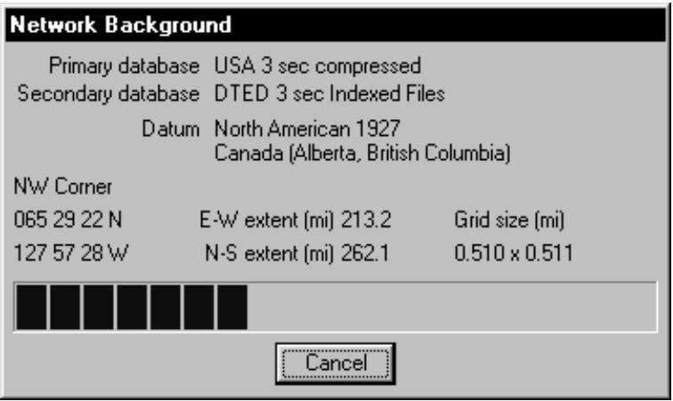
#91 textMàn hình hiển thị mạng sử dụng phép chiếu đối xứng dựa trên phạm vi của các trang web. Điều này được thực hiện bằng cách tạo một kinh tuyến trung tâm tùy ý tại chính xác trung tâm của
#92 textmàn hình. Nền được định dạng cho phép chiếu này. Nếu phạm vi hiển thị thay đổi do thêm một trang web mới hoặc thay đổi tham chiếu bản đồ, phép chiếu nền sẽ không còn hiệu lực và nó sẽ tự động bị xóa.
#93 text• Nếu màn hình được thu phóng, nền sẽ được thu phóng với độ phân giải giảm. Ở trạng thái thu phóng này, độ phân giải có thể được tăng lên kích thước pixel màn hình bằng lựa chọn menu Thu phóng Nền. Hình vẽ bên phải là nền đã được thu phóng cho cơ sở dữ liệu địa hình ESRI GRIDASCII có dữ liệu tòa nhà nhúng. Kết hợp với tính năng Thêm Trang web được mô tả bên dưới, người dùng có thể thiết kế một mạng lưới các trang web nằm trên các nóc tòa nhà. Nếu màn hình được cuộn hoặc thay đổi thu phóng, màn hình sẽ trở về nền ban đầu.
#94 image
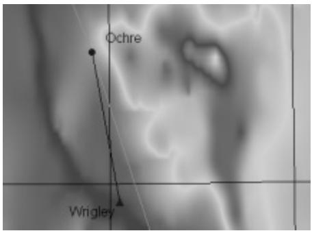
#95 titleThêm Trang web
#96 textChọn Dữ liệu Trang web - Thêm Trang web để thêm một trang web mới trực tiếp trên màn hình hiển thị mạng. Kết hợp với nền mạng, tính năng này sẽ hữu ích trong giai đoạn lập kế hoạch ban đầu. Một điểm đánh dấu trang web được hiển thị trên màn hình. Nhấp nút chuột trái trên màn hình để di chuyển điểm đánh dấu đến vị trí con trỏ, hoặc giữ nút chuột trái và kéo điểm đánh dấu đến vị trí mong muốn. Các phím mũi tên trên bàn phím cũng có thể được sử dụng để định vị điểm đánh dấu với độ phân giải một pixel. Trong nhiều trường hợp, có thể hữu ích khi thu phóng màn hình và nền khi thêm một trang web mới. Khi điểm đánh dấu đã vào đúng vị trí, nhấp vào nút Thêm Trang web và nhập tên trang web.
#97 image
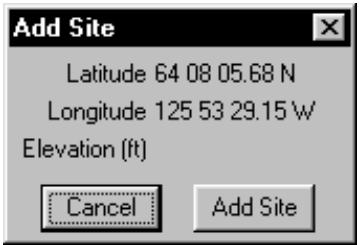
#98 titleChú giải Màu sắc
#99 textChọn Dữ liệu Trang web - Chú giải Màu sắc để hiển thị màu sắc cho các độ cao được sử dụng trên màn hình.
#100 image
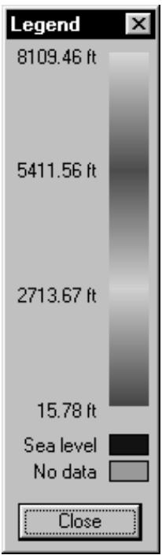
#101 textNền hiển thị có thể được tạm thời loại bỏ bằng lựa chọn menu Hiển thị Nền. Lựa chọn menu Tạo Nền sẽ bị vô hiệu hóa trong các điều kiện sau:
#102 list
chưa cấu hình cơ sở dữ liệu địa hình
tệp mạng chưa được lưu
#103 textTính năng tạo nền sẽ tạo hai tệp trong cùng thư mục với tệp mạng, sử dụng tên tệp mạng và các phần mở rộng bmp và bkg. Tệp bmp là một bitmap windows và tệp bkg chứa các độ cao xuất hiện khi hộp thoại Thêm Trang web đang hoạt động.
#104 titleCải thiện Hiệu suất Cơ sở dữ liệu Địa hình
#105 textTrước bản dựng chương trình tháng 1 năm 2000, độ cao được đọc từ cơ sở dữ liệu địa hình bằng các quy trình đọc tệp trực tiếp. Bản dựng hiện tại sử dụng kỹ thuật ánh xạ bộ nhớ để tăng tốc độ tổng thể. Một cải thiện đáng kể trong việc truy cập cơ sở dữ liệu địa hình đã đạt được với sự thay đổi này
#106 titleTính năng Thu phóng Mạng
#107 textMột phương pháp chia tỷ lệ mới đã được thêm vào hộp thoại Thiết lập Trang mạng. Chọn In - Thiết lập Trang để truy cập tính năng này. Phương pháp Tỷ lệ Không đổi duy trì chú giải trang web và văn bản tên trang web ở cùng kích thước bất kể mức thu phóng. Trên một mạng lớn bao phủ một khu vực vài trăm km, có thể tách biệt các trang web cách nhau 50 mét với tùy chọn này.
#108 image
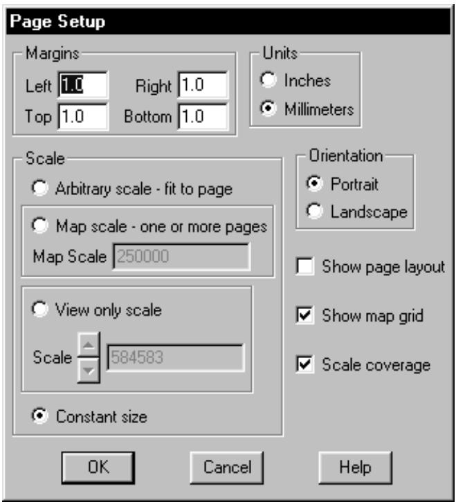
#109 titleOdyssey - Cơ sở dữ liệu Địa hình Utm
#110 textCơ sở dữ liệu địa hình Odyssey UTM sử dụng một chỉ mục để xác định các tệp bản đồ cần thiết. Chương trình bắt đầu với vĩ độ và kinh độ địa lý và chuyển đổi chúng thành tọa độ UTM (easting, northing và zone). Chỉ mục được quét bằng tọa độ UTM để tìm tệp chính xác.
#111 image
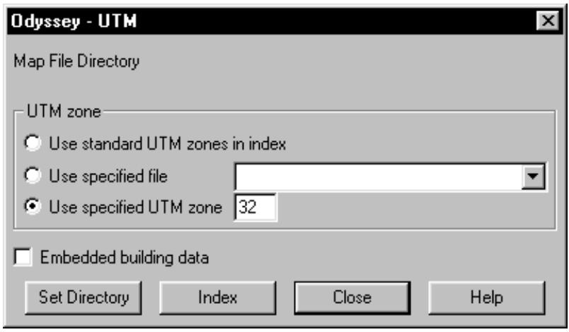
#112 textTrong một số trường hợp, một tệp duy nhất có sẵn trải dài trên nhiều vùng UTM nhưng tất cả dữ liệu được tham chiếu đến một vùng UTM. Trong trường hợp này, chỉ mục sẽ thất bại đối với các tọa độ không nằm trong định nghĩa vùng UTM tiêu chuẩn.
#113 textMột số tùy chọn được cung cấp để xử lý các tình huống này:
#114 list
các vùng UTM tiêu chuẩn được sử dụng xuyên suốt. Chương trình tính toán easting, northing và số vùng cần thiết, sau đó quét chỉ mục để tìm kết quả phù hợp.
vùng UTM của một tệp được chỉ định được sử dụng. Chương trình tính toán easting và northing cần thiết bằng cách sử dụng vùng UTM của tệp được chỉ định, sau đó quét chỉ mục để tìm kết quả phù hợp.
một vùng UTM được chỉ định được sử dụng. Chương trình tính toán easting và northing cần thiết bằng cách sử dụng vùng UTM được chỉ định, sau đó quét chỉ mục để tìm kết quả phù hợp.
#115 textHai tùy chọn cuối cùng có hoạt động tương tự; điểm khác biệt duy nhất là phương pháp xác định vùng UTM.
#116 titleDữ liệu Địa hình Cấp 5 DTM NTF V2.0 của Cơ quan Khảo sát Vương quốc Anh
#117 textHỗ trợ cho dữ liệu địa hình cấp 5 DTM NTF v2.0 của Cơ quan Khảo sát Vương quốc Anh được triển khai theo Lưới UK Odyssey. Các tệp NTF phải được chuyển đổi sang định dạng nhị phân Odyssey. Nhấp vào nút "Chuyển đổi tệp NTF của Cơ quan Khảo sát" và chọn các tệp cần chuyển đổi. Một hộp thoại mở tệp chọn nhiều được sử dụng cho mục đích này. Nếu một tệp duy nhất được chọn, người dùng sẽ được nhắc nhập tên và vị trí cho tệp nhị phân. Nếu nhiều tệp được chọn, tên tệp nhị phân là tên tệp AS-
#118 image
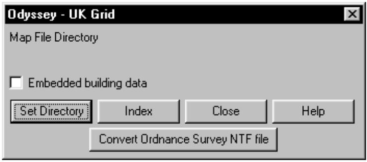
#119 textCII với hậu tố "bin". Tệp này sẽ được lưu ở cùng vị trí với tệp ASCII.
#120 textQuy trình chuyển đổi sẽ tự động tạo một mục chỉ mục. Ngoài ra, thông tin được thêm vào tệp NTF_DATA.txt nằm trong thư mục chương trình Pathloss. Tệp liệt kê tên tệp nhị phân và các cạnh tây, nam, đông và bắc được biểu thị bằng km sử dụng định dạng lưới quốc gia Vương quốc Anh.
#121 textTệp này sẽ hữu ích nếu cần thiết phải xây dựng chỉ mục theo cách thủ công. Một danh sách mẫu được hiển thị bên dưới.
#122 textNTF_DATA.txt
#123 textSs68.bin (W S E N)
#124 text259.9750 179.9750 280.0250 200.0250
#125 textCác tham số tệp sau được sử dụng:
#126 textKích thước ô (m) 50
#127 textByte / pixel 2
#128 textTừ dưới lên Sai
#129 textThứ tự byte INTEL
#130 titleCơ sở dữ liệu Địa hình Odyssey - Định dạng Lưới New Zealand
#131 textMột tùy chọn mới đã được thêm vào trình đọc cơ sở dữ liệu địa hình Odyssey cho dữ liệu tham chiếu đến hệ thống lưới bản đồ New Zealand. Hoạt động giống hệt với các định dạng lưới khác. Tệp chỉ mục có tên ODY_NZ.DAT và được lưu trong cùng thư mục với chương trình Pathloss.
#132 titleCơ sở dữ liệu Địa hình Odyssey - Tính năng Chỉ mục Tải
#133 textMột chỉ mục điển hình chứa tên tệp, tọa độ của các cạnh và kích thước ô như được hiển thị trong dòng ví dụ bên dưới:
#135 textHiện tại, tất cả các định dạng chỉ mục được phân cách bằng dấu cách.
#136 textMột tính năng nhập chỉ mục tổng quát đã được thêm vào để chuyển đổi danh sách tệp văn bản sang định dạng chỉ mục Odyssey.
#137 image
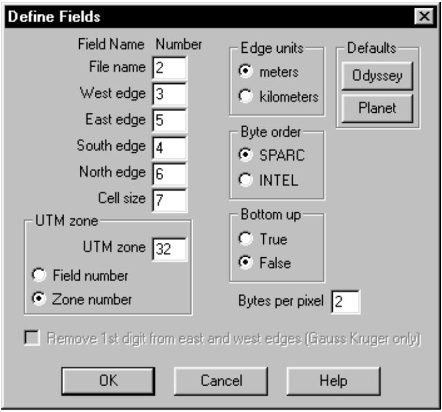
#138 textTrong màn hình hiển thị dữ liệu Chỉ mục, chọn Tệp - Chỉ mục.
#139 textQuy trình xác định vị trí trường và đơn vị trong tệp. Vùng UTM có thể được hiểu là số trường, trong trường hợp đó vùng UTM sẽ được đọc từ tệp chỉ mục. Ngoài ra, vùng UTM có thể được chỉ định trực tiếp và giá trị này sẽ được sử dụng cho tất cả các mục chỉ mục.
#140 textCác cờ "thứ tự byte" và "từ dưới lên" và mục nhập "byte trên mỗi pixel" là chung cho tất cả các mục chỉ mục.
#141 textNhấp OK và chọn tệp chỉ mục để tải.
#142 titleSuy hao do Mưa - ITU-R P.530-8
#143 textTính toán lượng mưa trong ITU-R P.530-8 sử dụng thuật toán sửa đổi cho các vĩ độ từ 301 bắc và nam. Điều này đã được triển khai như một tùy chọn riêng biệt bằng cách thêm điều khiển chỉnh sửa vĩ độ vào hộp thoại mưa. Thuật toán này sẽ thất bại đối với các đường truyền ngắn có biên độ fading lớn. Có thể thực tế hơn nếu sử dụng phương pháp ITU530-7 trong những trường hợp này.
#144 image
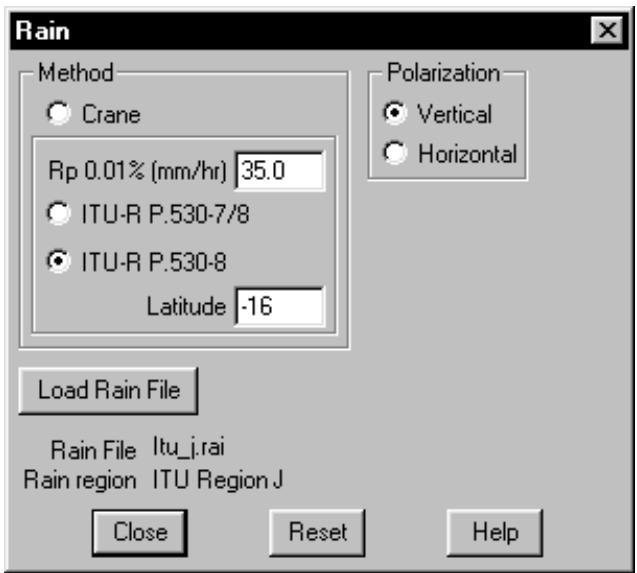
#145 textNếu có sẵn tọa độ địa lý, vĩ độ của trung tâm hoặc đường truyền sẽ được sử dụng; nếu không, vĩ độ mặc định sẽ được sử dụng.
#146 textNếu trường vĩ độ để trống, thì tính toán lượng mưa sẽ được thực hiện với giả định rằng vĩ độ lớn hơn 30 độ và kết quả sẽ tương ứng với ITU-R P.530-7
#147 textCác bước cơ bản trong tính toán được đưa ra dưới đây.
#148 textXác định cường độ mưa, \mathtt {R} _ {0 . 0 1} , vượt quá 0,01% thời gian. Giá trị này sẽ được nội suy từ tệp thống kê mưa hoặc người dùng có thể nhập thủ công giá trị này.
#149 text• Tính suy hao riêng, γ, như hình dưới đây:
#150 interline_equation
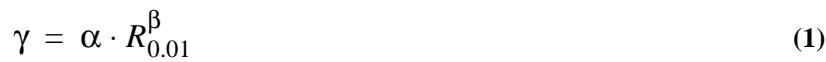
#151 texttrong đó α và β là các hệ số hồi quy được đưa ra trong bảng 1 trong phần mưa của sách hướng dẫn Pathloss.
#152 text• Tính chiều dài đường truyền hiệu dụng, d _ {e} , được tính như sau:
#153 interline_equation
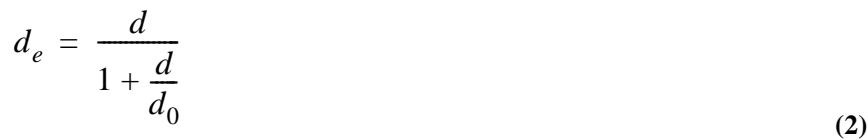
#154 interline_equation
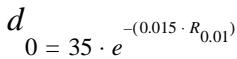
#155 texttrong đó d là chiều dài đường truyền tính bằng km. Giới hạn trên là 100 mm/giờ được đặt cho \mathtt {R} _ {0 . 0 1} trong phương trình trên.
#156 text• Suy hao đường truyền, \mathrm{ A _ {0 . 0 1} } , vượt quá 0,01% thời gian được cho bởi:
#157 interline_equation
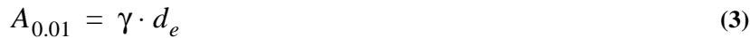
#158 text• Suy hao, A, vượt quá các tỷ lệ phần trăm thời gian khác, P, được suy ra từ các phương trình:
#159 textđối với các vĩ độ bằng hoặc lớn hơn 30° bắc hoặc nam
#160 interline_equation
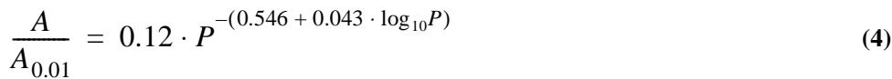
#161 textđối với các vĩ độ nhỏ hơn 30° bắc hoặc nam
#162 interline_equation
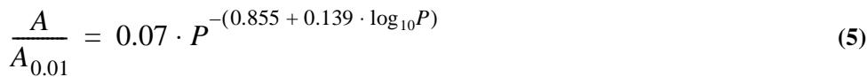
#163 text• Suy hao A trong các phương trình trên, được đặt thành biên độ fading và phương trình được giải cho P bằng các phương trình sau:
#164 textđối với các vĩ độ bằng hoặc lớn hơn 3 0 ^ {\circ} bắc hoặc nam
#165 interline_equation
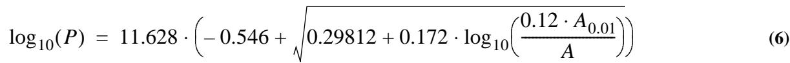
#166 textđối với các vĩ độ nhỏ hơn 30° bắc hoặc nam
#167 interline_equation
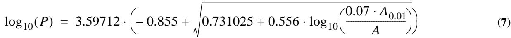
#168 textITU-530 nêu rõ rằng các phương trình chỉ có giá trị trong phạm vi từ 1% đến 0,001%. Trên nhiều liên kết thực tế, phạm vi này sẽ bị vượt quá, đặc biệt là trên các liên kết ngắn có biên độ fading cao.
#169 textTrong chương trình Pathloss, kết quả sẽ được báo cáo nếu đối số của căn bậc hai là không âm; nếu không, thông báo lỗi "Lỗi mưa - vượt quá giới hạn dưới - ITU-530" sẽ được đưa ra. Nếu tùy chọn "cảnh báo mưa ITU" đã được đặt trong lựa chọn menu Hoạt động - Tùy chọn, kết quả sẽ được hiển thị bằng màu đỏ trong phần tóm tắt tính toán của bảng tính nếu chúng nằm ngoài phạm vi 1% đến 0,001%.
#170 titleBáo cáo Danh sách Trang web và Liên kết CSV
#171 textMột báo cáo danh sách trang web và liên kết có sẵn dưới dạng tệp được phân cách bằng dấu phẩy hoặc tab (CSV) trong mô-đun mạng. Các báo cáo được hiển thị bằng chương trình bảng tính như Excel. Tất cả dữ liệu cho hai báo cáo này được lấy trực tiếp từ các tệp PL4. Dữ liệu mạng không được sử dụng. Tất cả các trường và thứ tự của chúng trong báo cáo do người dùng đặt.
#172 titleDanh sách Trang web CSV
#173 image
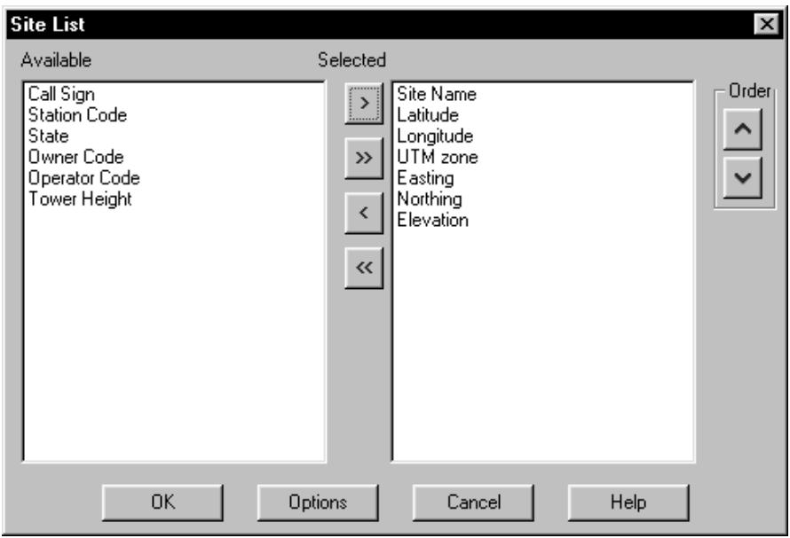
#174 textTrong mô-đun Mạng, chọn Dữ liệu Trang web - Danh sách Trang web. Sau đó chọn Báo cáo - Danh sách trang web CSV. Một danh sách lựa chọn đầu tiên được trình bày cho người dùng. Chọn các mục từ hộp danh sách Có sẵn và chuyển chúng sang hộp danh sách Đã chọn bằng nút >. Nút » chuyển tất cả các mục có sẵn sang danh sách đã chọn.
#175 textĐể trả lại các mục trong hộp danh sách Đã chọn về danh sách Có sẵn, hãy chọn các mục và sử dụng nút <. Nút kép bên trái di chuyển tất cả các lựa chọn trở lại hộp danh sách Có sẵn. Thứ tự của các mục đã chọn được đặt bằng các nút ^ và.
#176 titleTùy chọn Danh sách Trang web CSV
#177 image
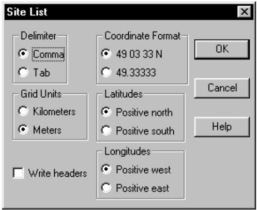
#178 textNhấp vào nút tùy chọn trong hộp thoại lựa chọn danh sách trang web để truy cập các cài đặt sau:
#179 titleDấu phân cách
#180 textDấu phân cách có thể là dấu phẩy hoặc tab. Nếu bạn đang sử dụng báo cáo này với Excel, phải chỉ định dấu phẩy.
#181 titleĐơn vị Lưới
#182 textNếu tọa độ lưới đã được chọn, chúng có thể được biểu thị bằng km hoặc mét.
#183 titleGhi tiêu đề
#184 textTiêu đề cột sẽ được ghi vào tệp CSV nếu tùy chọn này được chọn.
#185 titleĐịnh dạng tọa độ
#186 textTọa độ địa lý có thể được định dạng theo độ phút giây hoặc dưới dạng số dấu phẩy động. Nếu định dạng sau được chọn, quy ước dấu cho bán cầu phải được xác định.
#187 textKhi các tùy chọn và lựa chọn trường hoàn tất, nhấp vào nút OK để hiển thị báo cáo. Điều khiển lưới tiêu chuẩn được sử dụng cho mục đích này.
#188 table
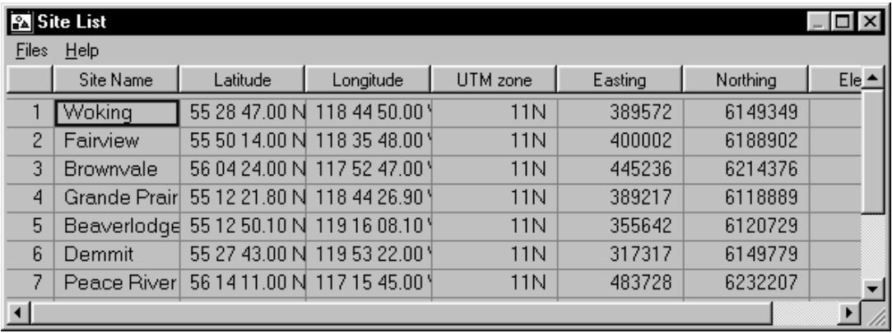
#189 textDữ liệu không thể chỉnh sửa; tuy nhiên, các cột có thể được sắp xếp. Nhấp vào tiêu đề cột để sắp xếp dữ liệu bằng trường này làm tiêu chí sắp xếp. Lần nhấp đầu tiên sắp xếp dữ liệu theo thứ tự tăng dần. Lần nhấp thứ hai sắp xếp theo thứ tự giảm dần.
#190 textChọn Tệp - Lưu để lưu báo cáo.
#191 titleDanh sách Liên kết CSV
#192 image
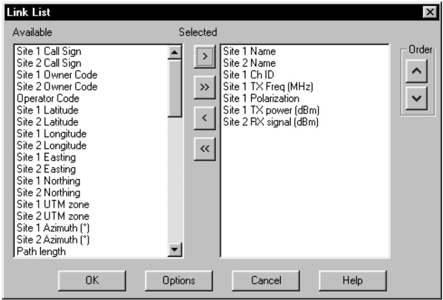
#193 textTrong mô-đun Mạng, chọn Dữ liệu Trang web - Danh sách Trang web. Sau đó chọn Báo cáo - Danh sách liên kết CSV. Một danh sách lựa chọn đầu tiên được trình bày cho người dùng. Báo cáo có thể được ghi bằng một dòng hoặc hai dòng cho mỗi liên kết
#194 textChọn các mục từ hộp danh sách Có sẵn và chuyển chúng sang hộp danh sách Đã chọn bằng nút >. Nút » chuyển tất cả các mục có sẵn sang hộp danh sách đã chọn.
#195 textĐể trả lại các mục trong hộp danh sách Đã chọn về danh sách Có sẵn, hãy chọn các mục và sử dụng nút <.
#196 textNút « di chuyển tất cả các lựa chọn trở lại hộp danh sách Có sẵn. Thứ tự của các mục đã chọn được đặt bằng các nút và •.
#197 titleTùy chọn Danh sách Liên kết CSV
#198 image
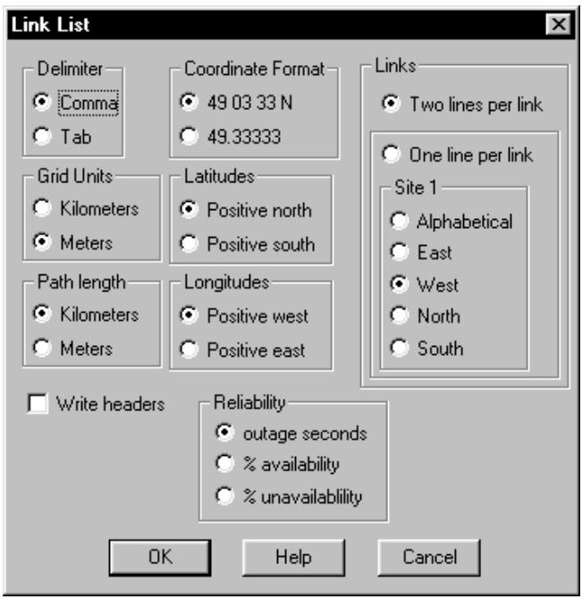
#199 textNhấp vào nút Tùy chọn trong hộp thoại lựa chọn Danh sách Liên kết để truy cập các cài đặt báo cáo danh sách liên kết sau:
#200 titleDấu phân cách
#201 textDấu phân cách có thể là dấu phẩy hoặc tab. Nếu bạn đang sử dụng báo cáo này với Excel, phải chỉ định dấu phẩy.
#202 titleĐơn vị Lưới
#203 textNếu tọa độ lưới đã được chọn, chúng có thể được biểu thị bằng km hoặc mét.
#204 titleChiều dài đường truyền
#205 textChiều dài đường truyền sẽ tính bằng dặm hoặc km theo cài đặt đo lường toàn cầu. Nếu chiều dài đường truyền tính bằng mét được chọn, thì chiều dài đường truyền sẽ được ghi bằng feet hoặc mét.
#206 titleGhi tiêu đề
#207 textTiêu đề cột sẽ được ghi vào tệp CSV nếu tùy chọn này được chọn.
#208 titleĐịnh dạng tọa độ
#209 textTọa độ địa lý có thể được định dạng theo độ phút giây hoặc dưới dạng số dấu phẩy động. Nếu định dạng sau được chọn, quy ước dấu cho bán cầu phải được xác định.
#210 titleSố dòng trên mỗi liên kết
#211 textBáo cáo có thể được ghi dưới dạng một hoặc hai dòng cho mỗi liên kết. Nếu tùy chọn một dòng cho mỗi liên kết được sử dụng, thì người dùng phải xác định tiêu chí để xác định trang web nào trong hai trang web sẽ là Trang web1 (trang web đầu tiên).
#212 textKhi các tùy chọn và lựa chọn trường hoàn tất, nhấp vào nút OK để hiển thị báo cáo. Điều khiển lưới tiêu chuẩn được sử dụng cho mục đích này.
#213 textDữ liệu không thể chỉnh sửa; tuy nhiên, các cột có thể được sắp xếp. Nhấp vào tiêu đề cột để sắp xếp dữ liệu bằng trường này làm tiêu chí sắp xếp. Lần nhấp đầu tiên sắp xếp dữ liệu theo thứ tự tăng dần. Lần nhấp thứ hai sắp xếp theo thứ tự giảm dần.
#214 table
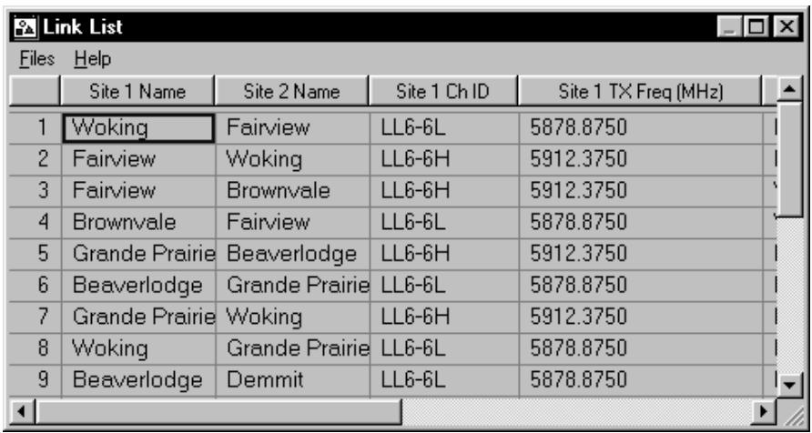
#215 textChọn Tệp - Lưu để lưu báo cáo.
#216 titleLưới Bản đồ
#217 titleTổng quan
#218 image
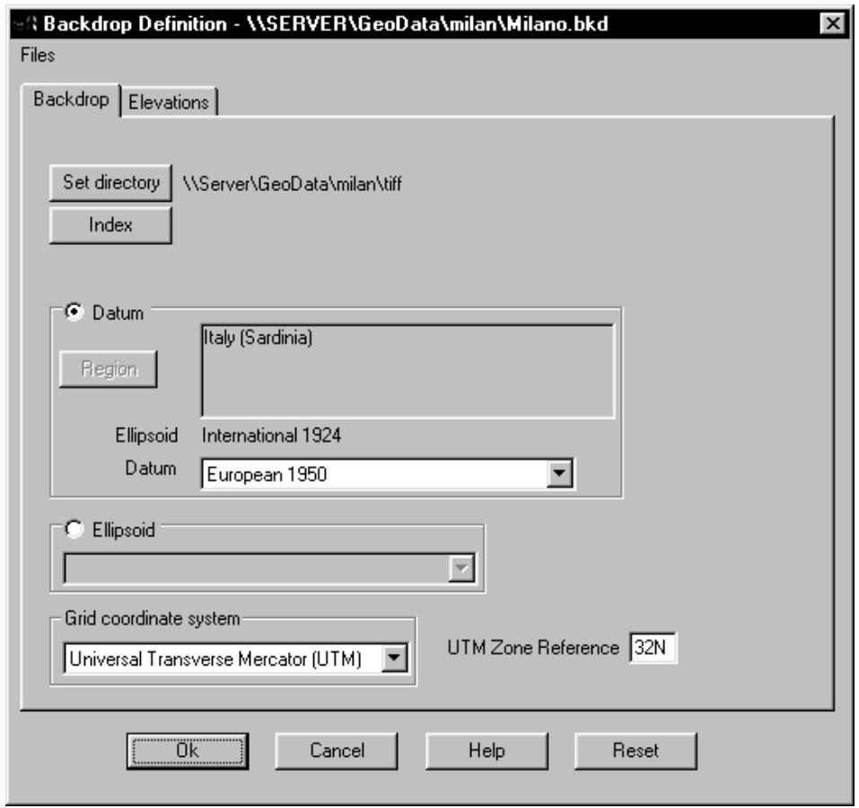
#219 textMột mô-đun hiển thị mạng trang web mới có tên Lưới Bản đồ đã được thêm vào trong bản dựng chương trình tháng 5 năm 2001. Mô-đun này hoạt động song song với mô-đun mạng hiện có. Mô-đun mạng sử dụng phép chiếu Mercator ngang để hiển thị các trang web. Kinh tuyến gốc của phép chiếu này được đặt ở điểm giữa của phạm vi đông - tây của các trang web. Điều này tạo ra một màn hình hiển thị với các đường vĩ độ và kinh độ đối xứng. Nếu một trang web mới được thêm vào làm thay đổi phạm vi hiển thị, một kinh tuyến gốc mới sẽ được tính toán. Do đó, phép chiếu biến đổi này sẽ không hỗ trợ các nền như bản đồ và ảnh trực giao.
#220 textMô-đun lưới bản đồ sử dụng các phép chiếu cố định để hiển thị các trang web mạng
#221 textvới cả nền và độ cao. Nền có thể ở định dạng TIF hoặc bitmap cửa sổ (BMP). Độ cao phải ở định dạng Odyssey - Planet BIL. Thiết lập cơ sở dữ liệu độ cao lưới bản đồ độc lập với thiết lập cơ sở dữ liệu địa hình trong Cấu hình - Cơ sở dữ liệu địa hình. Tại thời điểm này, phải sử dụng cùng một phép chiếu cho cả nền và độ cao.
#222 titleĐịnh nghĩa Nền
#223 textChọn Dữ liệu Trang web - Nền để truy cập hộp thoại định nghĩa nền. Một định nghĩa nền bao gồm các bước sau cho cả tệp hình ảnh và độ cao. Quy trình giống hệt nhau cho mỗi loại.
#224 list
1. chỉ định thư mục chứa các tệp hình ảnh / độ cao
2. tạo chỉ mục cho các tệp hình ảnh / độ cao
3. chỉ định phép chiếu bản đồ được sử dụng bởi các tệp hình ảnh / độ cao
4. chỉ định datum hoặc ellipsoid tham chiếu cho các tệp hình ảnh / độ cao
#225 titleĐặt Thư mục
#226 textNhấp vào nút đặt thư mục và trỏ đến thư mục chứa các tệp hình ảnh. Tất cả các tệp hình ảnh phải nằm trong thư mục này.
#227 titleChỉ mục Tệp Hình ảnh
#228 textNhấp vào nút Chỉ mục để truy cập biểu mẫu nhập dữ liệu lưới. Các trường sau có sẵn:
#229 textTên tệp hình ảnh tối đa 95 ký tự.
#230 textHiển thị bất kỳ tệp hình ảnh nào có thể tạm thời tắt.
#231 textLoại Hiện tại chỉ hỗ trợ các tệp hình ảnh TIF và bitmap (bmp).
#232 textCác cạnh Các cạnh tây, nam, đông và bắc. Chúng được biểu thị bằng km và phải tương ứng với phép chiếu bản đồ đã chọn.
#233 textKích thước ô mục nhập tùy chọn (không được sử dụng).
#234 textDữ liệu có thể được nhập thủ công bằng các quy trình được mô tả trong Vận hành Chương trình Chung hoặc được nhập từ danh sách hoặc tệp GeoTIF.
#235 titleNhập Danh sách
#236 image
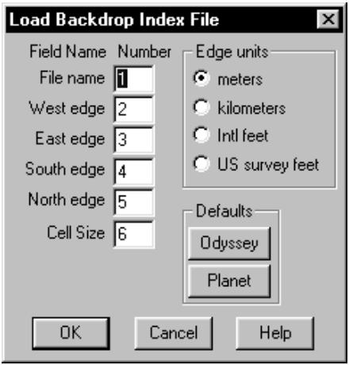
#237 textChọn Tệp B Nhập Danh sách. Chỉ định vị trí của các trường trong tệp cần nhập.
#238 textHai tùy chọn mặc định được cung cấp cho các tệp hình ảnh Planet và Odyssey.
#239 textChỉ định đơn vị của các cạnh, nhấp Ok và mở tệp chứa thông tin chỉ mục.
#240 titleTệp GeoTIF
#241 image
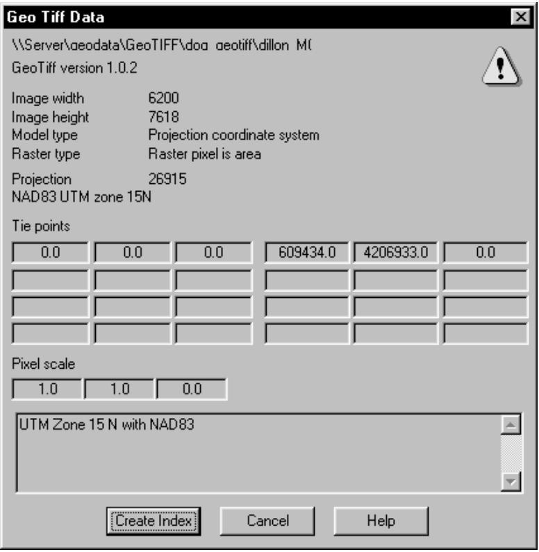
#242 textCác tệp GeoTIF có thể chứa thông tin cần thiết để tạo một mục chỉ mục cho tệp. Chọn Tệp B Tệp GeoTIF và mở tệp.
#243 textPhải có đủ thông tin trong tệp để xác định các cạnh, phép chiếu bản đồ và datum.
#244 textHiện tại, chỉ các phép chiếu UTM và tọa độ mặt phẳng tiểu bang Hoa Kỳ mới tự động tạo chỉ mục và đặt datum.
#245 titleDanh sách Mới
#246 textCác quy trình Nhập Danh sách và Tệp GeoTIF chỉ đơn giản là thêm mục nhập mới vào chỉ mục hiện có. Chọn Tệp B Danh sách Mới để xóa danh sách hiện có.
#247 titleTIFF sang Mảng Bitmap
#248 image
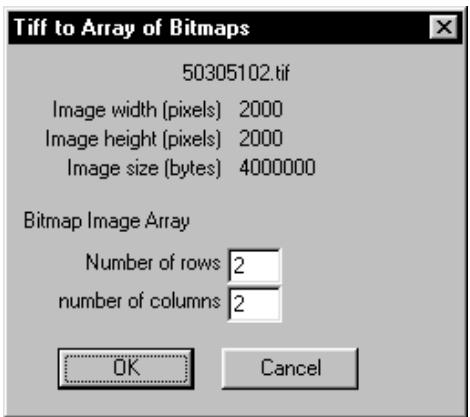
#249 textCác tệp TIF đôi khi được cung cấp với kích thước lớn trong phạm vi từ 150 đến 200 megabyte hoặc lớn hơn. Trước tiên, tệp TIF phải được chuyển đổi thành bitmap. Điều này có thể rất tốn thời gian và gây áp lực lên tài nguyên hệ thống. Một điều khoản đã được đưa ra để chuyển đổi một tệp TIF lớn thành một mảng các bitmap. Các bitmap sẽ được lưu trong cùng thư mục với tệp TIF.
#250 textChọn Tệp - Tạo mảng bitmap và nhập số hàng và cột. Chỉ mục sẽ được tự động cập nhật với dữ liệu bitmap. Hãy chắc chắn lưu tệp nền mới.
#251 textCác bitmap không được tải vào bộ nhớ. Thay vào đó, các tệp bitmap được mở dưới dạng các tệp được ánh xạ bộ nhớ. Có thể đạt được cải thiện hiệu suất đáng kể bằng cách sử dụng một số bitmap nhỏ hơn thay vì một tệp TIF lớn duy nhất.
#252 titleChỉ mục Tệp Độ cao
#253 textNhấp vào nút Chỉ mục để truy cập biểu mẫu nhập dữ liệu lưới. Các trường sau được yêu cầu cho một mục nhập tệp độ cao:
#254 table
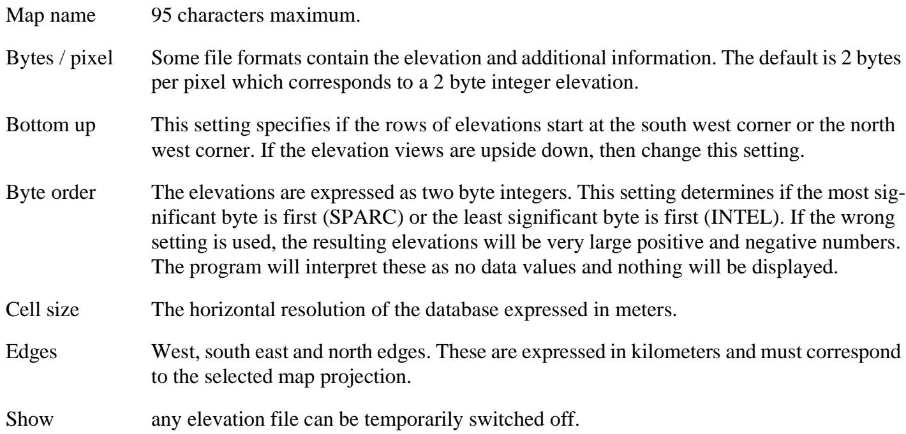
#255 textDữ liệu có thể được nhập thủ công bằng các quy trình được mô tả trong Vận hành Chương trình Chung hoặc được nhập từ một tệp danh sách.
#256 titleNhập Danh sách
#257 image
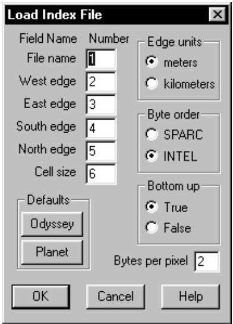
#258 textChọn Tệp B Nhập Danh sách. Chỉ định vị trí của các trường trong tệp cần nhập.
#259 textHai tùy chọn mặc định được cung cấp cho các tệp hình ảnh Planet và Odyssey.
#260 textChỉ định đơn vị của các cạnh, nhấp Ok và mở tệp chứa thông tin chỉ mục.
#261 titleChuyển đổi Tệp Độ cao
#262 textCác tệp độ cao phải ở định dạng Odyssey - Planet BIL. Một số tiện ích chuyển đổi tệp có sẵn để chuyển đổi định dạng khác sang định dạng BIL. Chọn Tệp - Chuyển đổi trong menu chỉ mục Độ cao để truy cập các chuyển đổi này.
#263 titleLựa chọn Datum - Ellipsoid
#264 textHình dạng của trái đất không phải là hình cầu. Đúng hơn, nó gần giống một ellipsoid dẹt quay, còn được gọi là hình cầu dẹt. Đây là một hình elip quay quanh trục nhỏ của nó.
#265 textTrái đất không phải là một ellipsoid chính xác. Geoid là tên được đặt cho hình dạng mà trái đất sẽ có nếu tất cả các phép đo được tham chiếu đến mực nước biển trung bình. Đây là một bề mặt nhấp nhô nằm trong phạm vi 100 mét so với một ellipsoid khớp tốt. Lưu ý rằng độ cao và đường đồng mức được tham chiếu đến geoid. Vĩ độ và kinh độ và tất cả các hệ tọa độ lưới được tham chiếu đến ellipsoid.
#266 textEllipsoid được xác định bởi bán trục lớn và bán trục nhỏ. Ngoài ra, điều này có thể được biểu thị bằng bán trục lớn và độ dẹt hoặc độ lệch tâm như được xác định bởi phương trình (8) dưới đây:
#267 interline_equation
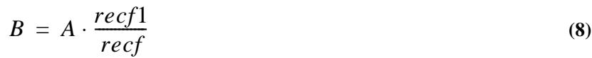
#268 texttrong đó:
#269 table
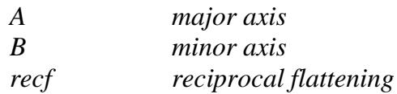
#270 titleDatum địa phương
#271 textBan đầu, các ellipsoid được khớp với bề mặt mực nước biển trung bình trên một khu vực hoặc quốc gia cụ thể. Chúng có liên quan đến một điểm ban đầu trên bề mặt trái đất để tạo ra một datum địa phương. Điểm ban đầu này được gán một vĩ độ, kinh độ, độ cao so với ellipsoid và một góc phương vị đến một điểm nào đó. Điểm ban đầu này trở thành trạm tam giác Principio mà tất cả các phép đo kiểm soát mặt đất sẽ được tham chiếu đến. Vĩ độ, kinh độ và độ cao của tất cả các điểm kiểm soát trong khu vực được tính toán tương đối so với điểm ban đầu này và ellipsoid.
#272 textMột ví dụ về datum địa phương là Datum Bắc Mỹ năm 1927 (NAD27) với các tham số sau:
#273 textellipsoid tham chiếu
#274 textClark 1866
#275 textbán trục lớn 6378206.4 km
#276 textnghịch đảo độ dẹt 294.9786982
#277 textđiểm gốc Meades Ranch ở Kansas
#278 titleDatum toàn cầu
#279 textCác datum toàn cầu sử dụng ellipsoid được xác định từ các phương pháp khảo sát dựa trên vệ tinh và xác định một hệ tọa độ được sử dụng cho toàn bộ trái đất. Tâm của ellipsoid tham chiếu nằm tại tâm khối lượng của trái đất. Một ví dụ về datum toàn cầu là Hệ thống Trắc địa Thế giới năm 1984 (WGS 84)
#280 textellipsoid tham chiếu WGS 84
#281 textbán trục lớn 6378137.0 km
#282 textnghịch đảo độ dẹt 298.257223563
#283 textđiểm gốc tâm khối lượng của trái đất
#284 textTrong chương trình Pathloss, có thể chọn datum hoặc ellipsoid. Việc chọn một datum gián tiếp xác định ellipsoid tham chiếu và vì tất cả các chuyển đổi giữa tọa độ trắc địa và hình chữ nhật cũng như các tính toán khoảng cách và góc phương vị đều dựa trên ellipsoid tham chiếu, hai lựa chọn này có vẻ dư thừa.
#285 textMột datum trong chương trình Pathloss bao gồm dữ liệu bổ sung để cho phép chuyển đổi tọa độ trắc địa giữa các datum. Trong các datum địa phương, cần phải chia nhỏ khu vực được bao phủ bởi datum thành các vùng nhỏ hơn để cải thiện độ chính xác của việc chuyển đổi tọa độ.
#286 textMột số phép chiếu bản đồ địa phương không có datum tương ứng. Một vài ví dụ:
#287 textLưới Quốc gia Thụy Sĩ - ellipsoid tham chiếu - Bessel 1841
#288 textLưới Quốc gia Ireland - ellipsoid tham chiếu - airy đã sửa đổi
#289 textTrong những trường hợp này, phải chỉ định một hình elip và sẽ không có điều khoản nào để chuyển đổi tọa độ. Ví dụ: tọa độ trắc địa trong tọa độ WGS84 không thể chuyển đổi sang tọa độ Lưới Quốc gia Thụy Sĩ; tuy nhiên tọa độ WG84 có thể được chuyển đổi sang Datum Châu Âu năm 1950
#290 textLưu ý rằng trong bản dựng chương trình hiện tại, phép chiếu bản đồ và datum / ellipsoid phải được chỉ định cho cả tệp hình ảnh và tệp độ cao. Tính tổng quát này sẽ cho phép thêm tính linh hoạt trong bản dựng tương lai bằng cách cho phép chuyển đổi tọa độ giữa các datum. Các lỗi trong các chuyển đổi này chắc chắn sẽ lớn hơn độ phân giải dữ liệu hình ảnh / độ cao và sẽ cần thiết phải cung cấp các quy trình để khớp dữ liệu hình ảnh và độ cao.
#291 textViệc lựa chọn datum hoặc ellipsoid tham chiếu phải giống nhau cho dữ liệu trang web, tệp hình ảnh và tệp độ cao. Phải sử dụng cùng một phép chiếu bản đồ cho các tệp hình ảnh và độ cao.
#292 titlePhép chiếu Bản đồ
#293 textChọn một trong các phép chiếu bản đồ trong danh sách thả xuống. Các phép chiếu sau hiện được hỗ trợ:
#294 text• UTM - Universal Transverse Mercator - Phải chỉ định vùng UTM.
#295 list
Lưới Quốc gia Thụy Sĩ *
Lưới Khảo sát Vương quốc Anh *
Lưới Quốc gia Ireland *
Lưới New Zealand *
Gauss Kruger
Lưới Mặt phẳng Tiểu bang Hoa Kỳ *
#296 textViệc chọn bất kỳ phép chiếu nào được đánh dấu bằng *, sẽ tự động chọn datum hoặc ellipsoid chính xác.
#297 textPhép chiếu mặc định giống như phép chiếu được sử dụng trong mô-đun mạng. Đây là phép chiếu Mercator ngang được tham chiếu đến một kinh tuyến trung tâm nằm ở trung tâm của phạm vi đông - tây của các trang web. Lựa chọn này thực sự ức chế tất cả các quy trình hình ảnh và độ cao trong mô-đun Lưới Bản đồ.
#298 titleCác Cân nhắc Khác
#299 textKhi định nghĩa nền hoàn tất, hãy lưu tệp bằng menu tệp trong hộp thoại này.
#300 textNhấp OK để đóng hộp thoại định nghĩa nền. Các tệp hình ảnh được tải vào bộ nhớ và hiển thị. Nếu việc tải tệp bị hủy, thì cần phải gọi lại hộp thoại định nghĩa nền và đóng nó bằng nút OK một lần nữa.
#301 textTệp định nghĩa nền hiện tại sẽ được tự động tải lại khi chương trình được khởi động lại và mô-đun lưới bản đồ được nhập.
#302 textNếu một tệp mạng có phạm vi cách xa 10 độ so với phạm vi của dữ liệu hình ảnh được tải, thì phép chiếu bản đồ sẽ tự động được đặt thành mặc định và các tính năng hình ảnh và độ cao bị ức chế.
#303 titleChế độ Con trỏ
#304 titleĐiều khiển Di chuyển và Thu phóng
#305 textNhấp vào nút để đặt con trỏ ở chế độ di chuyển. Giữ nút chuột trái và kéo màn hình đến vị trí mới. Màn hình cũng có thể được di chuyển bằng các phím mũi tên bất kỳ lúc nào.
#306 textNhấp vào nút Q để đặt con trỏ ở chế độ thu phóng. Một cú nhấp chuột trái phóng to màn hình một lượng đặt trước và căn giữa màn hình tại vị trí con trỏ. Một cú nhấp chuột phải thu nhỏ và căn giữa màn hình. Để thu phóng một khu vực cụ thể, giữ nút chuột trái và kéo chuột để xác định khu vực mong muốn. Ba nút bổ sung ảnh hưởng đến màn hình như sau:
#307 list
Hình ảnh nền được hiển thị từ góc trên bên trái với cùng độ phân giải như tệp hình ảnh.
Phạm vi của dữ liệu trang web được hiển thị.
Phạm vi của các tệp hình ảnh được hiển thị.
Chế độ xem độ cao được tắt và bật bằng cách nhấp vào nút này.
#308 titleCon trỏ Chế độ Liên kết
#309 textNhấp vào nút $ để đặt con trỏ ở chế độ liên kết. Đây là chế độ con trỏ mặc định trong mô-đun mạng và được sử dụng để truy cập các mô-đun thiết kế, tạo liên kết giữa hai trang web và đặt có chọn lọc các thuộc tính của liên kết và trang web.
#310 titleKiểm tra Tầm nhìn và Tạo Mặt cắt
#311 textNhấp vào nút để bắt đầu kiểm tra tầm nhìn. Đặt con trỏ tại một vị trí, giữ nút chuột trái và kéo chuột đến vị trí thứ hai. Tiến trình của mặt cắt được hiển thị động trên
#312 chart
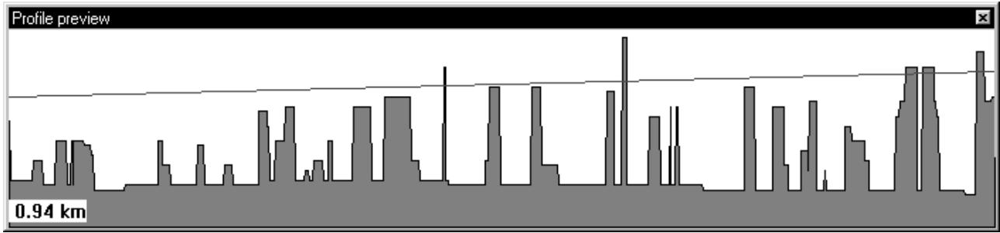
#313 textmàn hình. Để đặt lại màn hình này trong quá trình tạo mặt cắt, nhấp nút chuột phải. Khi nút chuột trái được nhả ra, một màn hình phân tích mặt cắt sẽ xuất hiện. Màn hình này cho phép bạn thay đổi chiều cao ăng-ten, hệ số bán kính trái đất K và kiểm tra độ hở bằng cách sử dụng các tham chiếu vùng Fresnel của màn hình độ hở.
#314 chart
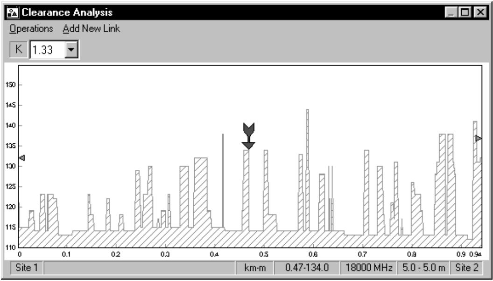
#315 textBạn có thể thêm liên kết này vào danh sách dữ liệu trang web và lưu dữ liệu dưới dạng tệp Pathloss pl4. Nếu hai vị trí đầu cuối không nằm giữa các trang web hiện có, bạn nên thay đổi tên trang web từ tên mặc định Trang web 1 và Trang web 2. Để thoát khỏi chế độ tạo mặt cắt, hãy đóng màn hình xem trước mặt cắt, nhấp lại vào nút hoặc thay đổi chế độ con trỏ sang chế độ di chuyển, thu phóng hoặc liên kết.
#316 titleHiển thị Độ cao
#317 textMột màn hình hiển thị độ cao có thể được tạo ở bất kỳ mức thu phóng nào, sẽ phủ lên nền hình ảnh. Phạm vi của màn hình luôn tương ứng với phạm vi hiển thị hiện tại.
#318 image
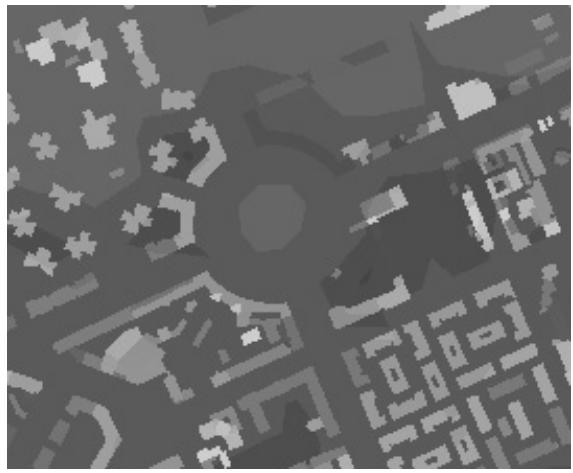
#319 textChọn Dữ liệu Trang web - Chế độ xem Độ cao - Tạo.
#320 textMàn hình này hữu ích để giải quyết các khác biệt nhỏ về độ cao có thể không rõ ràng từ màn hình hình ảnh.
#321 textMột chú giải độ cao có sẵn trong cùng menu.
#322 textMàn hình độ cao sẽ vẫn còn cho đến khi nó được đặt lại.
#323 textMột số tùy chọn hiển thị có sẵn. Chọn Độ cao - Xem - Tùy chọn.
#324 textMàu sắc có thể là một dải màu chuyển tiếp hoặc thang độ xám. Màn hình độ cao được phủ lên trên màn hình nền. Mã hoạt động raster là SRCCOPY trong hình vẽ trên, mã này ẩn nền. Mã ADSP- Dxax@ là một bản sao trong suốt cho phép nhìn xuyên qua nền. Nếu sử dụng bất kỳ mã nào khác ngoài SRCCOPY, màu sắc của chú giải độ cao sẽ không chính xác.
#325 image
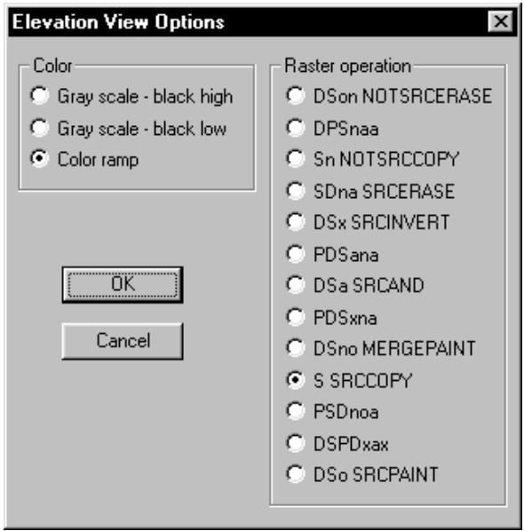
#326 titleThêm Trang web và Di chuyển Trang web
#327 textHai thao tác tương tự cho phép người dùng thêm trực quan một trang web mới hoặc di chuyển một trang web hiện có. Chọn Dữ liệu Trang web - Thêm Trang web hoặc Di chuyển Trang web
#328 textTrong trường hợp thêm trang web, sử dụng chuột để định vị điểm đánh dấu tại vị trí mong muốn.
#329 textNhấp vào nút Thêm trang web và nhập tên cho trang web.
#330 image
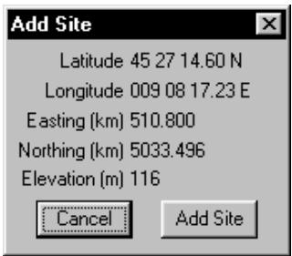
#331 textTrong trường hợp di chuyển trang web, trước tiên hãy xác định trang web cần di chuyển bằng cách nhấp nút chuột trái trên chú giải trang web. Sau đó di chuyển trang web đến vị trí mới và nhấp vào nút OK.
#332 textCả hai màn hình đều hiển thị độ cao.
#333 image
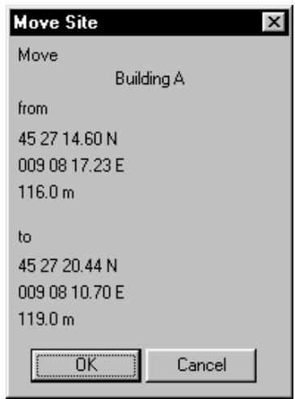
#334 titleĐịnh nghĩa - Bảng thuật ngữ
#335 textDatum - Bất kỳ đại lượng số hoặc hình học nào hoặc tập hợp các đại lượng đó xác định hệ tọa độ tham chiếu được sử dụng để kiểm soát trắc địa trong tính toán tọa độ của các điểm trên trái đất. Datum có thể có phạm vi toàn cầu hoặc địa phương. Một datum địa phương xác định một hệ tọa độ chỉ được sử dụng trên một khu vực có phạm vi hạn chế. Một datum toàn cầu chỉ định tâm của ellipsoid tham chiếu nằm tại tâm khối lượng của trái đất và xác định một hệ tọa độ được sử dụng cho toàn bộ trái đất.
#336 textEllipsoid - Bề mặt được tạo ra bởi một hình elip quay quanh một trong các trục của nó.
#337 textTọa độ Địa tâm - Tọa độ Descartes (X, Y, Z) xác định vị trí của một điểm so với tâm khối lượng của trái đất.
#338 textTọa độ Trắc địa - Các đại lượng vĩ độ và kinh độ xác định vị trí của một điểm trên bề mặt trái đất so với ellipsoid tham chiếu. Còn được gọi không chính xác là tọa độ địa lý.
#339 textĐộ cao Trắc địa - Độ cao so với ellipsoid tham chiếu, được đo dọc theo pháp tuyến ellipsoid qua điểm đang xét. Độ cao trắc địa là dương nếu điểm nằm bên ngoài ellipsoid. Còn được gọi là độ cao ellipsoid, h.
#340 textVĩ độ Trắc địa - Góc giữa mặt phẳng xích đạo và pháp tuyến với ellipsoid qua điểm tính toán. Vĩ độ trắc địa dương về phía bắc của xích đạo và âm về phía nam của xích đạo.
#341 textKinh độ Trắc địa - Góc giữa mặt phẳng của một kinh tuyến và mặt phẳng của kinh tuyến gốc. Kinh độ có thể được đo từ góc tạo thành giữa kinh tuyến địa phương và kinh tuyến gốc tại cực quay của ellipsoid tham chiếu, hoặc bằng cung dọc theo xích đạo bị chặn bởi các kinh tuyến này.
#342 textGeoid - Bề mặt đẳng thế của trường trọng lực trái đất được xấp xỉ bằng mực nước biển trung bình không bị xáo trộn của các đại dương. Hướng của trọng lực đi qua một điểm nhất định trên geoid là vuông góc với bề mặt đẳng thế này.
#343 textPhân tách Geoid - Khoảng cách giữa geoid và ellipsoid tham chiếu toán học được đo dọc theo pháp tuyến ellipsoid. Khoảng cách này là dương bên ngoài, hoặc âm bên trong, ellipsoid tham chiếu. Còn được gọi là chiều cao geoid; sự nhấp nhô của geoid.
#344 textDatum Ngang - Một datum ngang chỉ định hệ tọa độ trong đó vĩ độ và kinh độ của các điểm được xác định. Vĩ độ và kinh độ của một điểm ban đầu, góc phương vị của một đường từ điểm đó, và bán trục lớn và độ dẹt của ellipsoid xấp xỉ bề mặt trái đất trong khu vực quan tâm xác định một datum ngang.
#345 textEllipsoid Tham chiếu - Một ellipsoid có kích thước gần đúng với kích thước của geoid; kích thước chính xác được xác định bởi các cân nhắc khác nhau của phần bề mặt trái đất có liên quan. Thường là một ellipsoid quay hai trục.
#346 textDatum Dọc - Một datum dọc là bề mặt mà các độ cao được tham chiếu đến. Một datum dọc địa phương là một bề mặt liên tục, thường là mực nước biển trung bình, tại đó các độ cao được giả định bằng 0 trong toàn bộ khu vực quan tâm.
#347 textWGS 72 - Hệ thống Trắc địa Thế giới 1972. WGS 72 là hệ thống trắc địa thế giới cố định tâm trái đất, gắn với trái đất tiêu chuẩn trước đây của DoD. Nó đã được thay thế bởi WGS 84.
#348 textWGS 84 - Hệ thống Trắc địa Thế giới 1984. Một hệ thống trắc địa thế giới cung cấp khung tham chiếu cơ bản, hình dạng hình học và mô hình trọng trường cho trái đất, và cung cấp phương tiện để liên hệ các vị trí trên các hệ thống trắc địa địa phương khác nhau với một hệ tọa độ cố định tâm trái đất, gắn với trái đất. WGS 84 là hệ thống trắc địa thế giới cố định tâm trái đất, gắn với trái đất tiêu chuẩn hiện tại của DoD.
#349 titleTài liệu tham khảo
#350 text(1) Trung tâm Kỹ thuật Địa hình, TEC-SR-7,
#351 textSổ tay chuyển đổi DATUMS, PHÉP CHIẾU, LƯỚI VÀ CÁC HỆ TỌA ĐỘ THÔNG DỤNG, tháng 1 năm 1996.
#352 text(2) Bộ Quốc phòng, MIL-HDBK-850, Sổ tay Quân sự B Bảng thuật ngữ về Bản đồ, Biểu đồ và Trắc địa, ngày 21 tháng 1 năm 1994.
#353 titleTương quan Suy hao Giữa Nhiễu và Đường truyền Mong muốn
#354 titleTổng quan
#355 textNếu một tín hiệu gây nhiễu đi theo cùng một đường truyền với tín hiệu mong muốn, hai tín hiệu có thể được coi là có tương quan ở một mức độ nào đó. Tín hiệu gây nhiễu sẽ bị fading cùng lúc với tín hiệu mong muốn; do đó làm giảm tác động của nhiễu.
#356 image
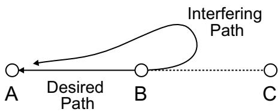
#357 textĐây là trường hợp cho cả fading do mưa và đa đường; tuy nhiên, mức độ tương quan cho hai điều kiện này sẽ khác nhau. Trong trường hợp fading đa đường, người ta thực tế cho rằng chỉ có một fading tồn tại
#358 texttại bất kỳ thời điểm nào trong một khu vực do các đặc điểm của fading sâu. Fading đa đường có thời gian ngắn và có tính cục bộ cao trong một khu vực. Mặt khác, fading do mưa có thời gian dài hơn, tương đối độc lập với tần số trong một băng tần nhất định và có thể mở rộng trên một khu vực rộng.
#359 textĐể xử lý tương quan fading này, bản dựng chương trình tháng 5 năm 2001 xem xét biên độ fading nhiễu và suy giảm ngưỡng cho cả mưa và đa đường riêng biệt dưới giả định rằng fading do mưa và đa đường là các sự kiện loại trừ lẫn nhau. Có điều khoản để chỉnh sửa tương quan fading mưa - đa đường và gán các giá trị mặc định cho tương quan này khi bắt đầu tính toán nhiễu.
#360 image
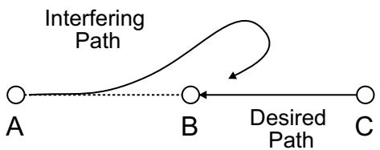
#361 textTính toán nhiễu cơ bản luôn được thực hiện và giữ lại. Ảnh hưởng của tương quan mưa và đa đường không làm thay đổi tính toán cơ bản.
#362 textMột ví dụ về fading tương quan sẽ là một hệ thống kế hoạch hai tần số đa chặng với các trang web được chỉ định là A, B và C. Máy thu tại trang web A có máy phát liên kết nằm tại trang web B, sẽ bị nhiễu bởi máy phát cũng tại trang web B truyền đến trang web C. Tỷ lệ sóng mang trên nhiễu hoàn toàn được xác định bởi tỷ lệ trước/sau của ăng-ten phát gây nhiễu. Vì cả tín hiệu mong muốn và tín hiệu gây nhiễu đều đi theo đường truyền từ B đến A, có thể đưa ra các cân nhắc sau.
#363 image
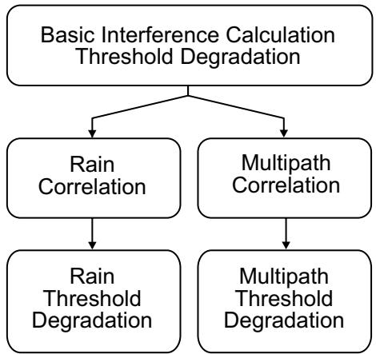
#364 text• Mưa sẽ làm suy hao tín hiệu mong muốn và tín hiệu gây nhiễu như nhau nếu phân cực giống nhau cho cả hai tín hiệu. Phân cực của tín hiệu gây nhiễu là không xác định ngoài hướng chuẩn và có thể được coi là tròn ở các góc phân biệt lớn hơn 90 độ.
#365 textDo đó, fading có thể được coi là hoàn toàn tương quan và trường hợp này có thể được bỏ qua.
#366 textMức độ tương quan giữa fading của tín hiệu mong muốn và tín hiệu gây nhiễu do đa đường sẽ phụ thuộc vào chiều cao ăng-ten của máy phát mong muốn và máy phát gây nhiễu tại trang web B. Phân cực sẽ ảnh hưởng đến tương quan ở mức độ thấp hơn. Đối với chiều cao ăng-ten bằng nhau, fading có thể được coi là tương quan; nếu không, tồn tại tình huống tương quan một phần.
#367 titleTương quan Suy hao Kênh lân cận
#368 textMột hệ thống một cho N là một trường hợp đặc biệt của tương quan. Từ quan điểm đa đường, chênh lệch tần số giữa tín hiệu mong muốn và bộ gây nhiễu kênh lân cận đủ nhỏ để cung cấp một số tương quan fading đa đường. Sự tương quan này kết hợp với cải thiện bộ lọc thường đủ để giải quyết trường hợp này. Ở khoảng cách tần số từ hai kênh lân cận trở lên, cải thiện bộ lọc đủ để bỏ qua nhiễu.
#369 textTừ quan điểm fading do mưa, các đường truyền gây nhiễu và mong muốn hoàn toàn tương quan và nhiễu có thể được bỏ qua.
#370 titleCác Cân nhắc về ATPC
#371 textMột báo cáo chi tiết nhiễu hiển thị tỷ lệ sóng mang trên nhiễu. Trước bản dựng tháng 5 năm 2001, C/I luôn được tính toán với tín hiệu thu ở công suất tối đa và tín hiệu gây nhiễu ở công suất tối thiểu khi ATPC được chỉ định. Tính toán C đến I hiện phụ thuộc vào tương quan không gian như sau
#372 textKhông tương quan tín hiệu thu tối thiểu - tín hiệu gây nhiễu tối thiểu
#373 textTương quan tín hiệu thu tối thiểu - tín hiệu gây nhiễu tối đa
#374 titleCài đặt Chương trình Mặc định
#375 textKhi bắt đầu tính toán nhiễu, các giá trị tương quan mặc định có thể được gán cho tính toán. Trong mô-đun Mạng, chọn - Nhiễu - Tính toán Nội bộ để mở hộp thoại nhiễu.
#376 image
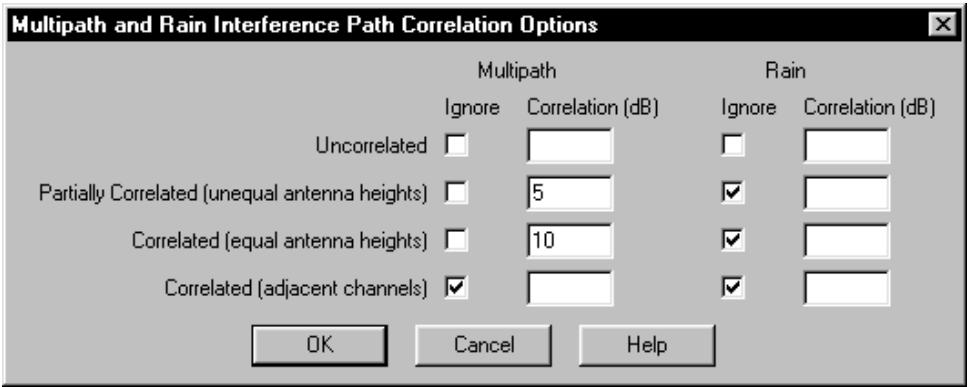
#377 textNhấp vào nút Tùy chọn Tương quan để đặt các giá trị mặc định. Bốn loại tương quan có sẵn bao gồm không tương quan cho cả đa đường và mưa. Người dùng có thể chọn bỏ qua nhiễu hoặc chỉ định một giá trị cho tương quan. Hãy nhớ rằng bất kỳ cài đặt nào ở đây không ảnh hưởng đến tính toán cơ bản.
#378 titleChỉnh sửa Tương quan
#379 image
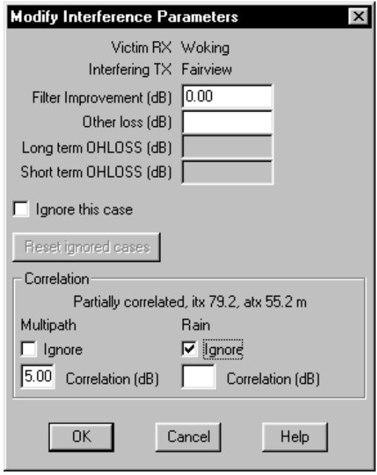
#380 textTương quan có thể được chỉnh sửa trên cơ sở từng trường hợp trong hộp thoại Sửa đổi Tham số Nhiễu. Hộp thoại này có thể được truy cập từ báo cáo chi tiết trường hợp trong lựa chọn menu Sửa đổi.
#381 textChiều cao ăng-ten được hiển thị dưới các ký hiệu:
#382 textitx máy phát gây nhiễu
#383 textatx máy phát trang web lân cận của máy thu nạn nhân
#384 textTương quan cũng có thể được chỉnh sửa trực tiếp trong màn hình Mạng. Chọn Nhiễu - Chỉnh sửa Tương quan. Tổ chức giống như tổ chức được sử dụng trong báo cáo chi tiết trường hợp. Mỗi máy thu là một trường hợp. Mỗi bộ gây nhiễu vào máy thu đó là một trường hợp con. Đường truyền nhiễu được hiển thị trên màn hình mạng, giúp gán các giá trị cho tương quan. Các mũi tên bên trái thay đổi máy thu (trường hợp) và các mũi tên bên phải thay đổi máy phát gây nhiễu (trường hợp con).
#385 textCác tần số và phân cực được hiển thị cùng với chiều cao ăng-ten sử dụng cùng danh pháp như được mô tả ở trên. Ngoài ra, các tham số sau được đưa ra:
#386 image
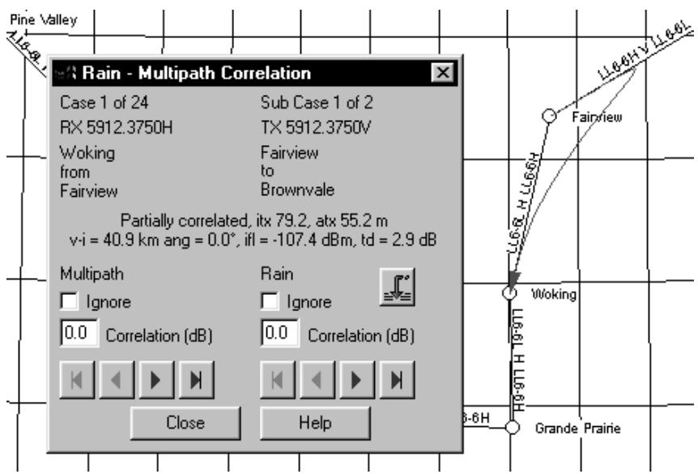
#387 textv-i chiều dài đường truyền từ nạn nhân đến bộ gây nhiễu
#388 textang góc phân biệt tại máy thu nạn nhân
#389 textifl mức tín hiệu gây nhiễu
#390 texttd suy giảm ngưỡng
#391 textNút cho phép người dùng đi đến một số trường hợp cụ thể. Báo cáo tham chiếu chéo có thể được sử dụng như một chỉ mục tổng thể.
#392 titleMục tiêu Hiệu suất Lỗi ITU-T G.826
#393 textITU-T G.826 xác định hiệu suất của các hệ thống vô tuyến SDH theo các tham số sau.
#394 textTỷ lệ Giây Lỗi Nghiêm trọng Vô tuyến (SESR)
#395 textTỷ lệ Lỗi Khối Nền (BBER)
#396 textTỷ lệ Giây Lỗi (ESR)
#397 textPhần này mô tả việc triển khai khuyến nghị này của Pathloss.
#398 titleTỷ lệ Lỗi Bit SESR
#399 textMột tỷ lệ lỗi bit đã được sửa đổi trước tiên được xác định như sau:
#400 interline_equation
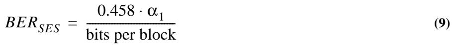
#401 table
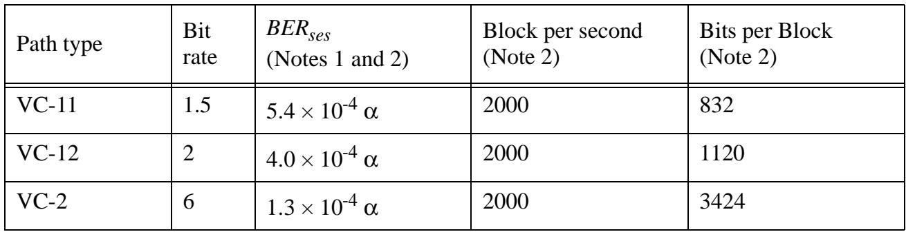
#402 table
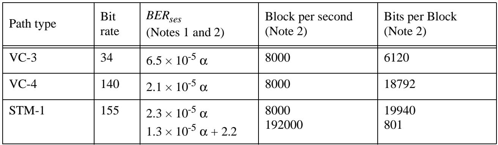
#403 textLƯU Ý 1 α = 1 chỉ ra phân bố lỗi Poisson.
#404 textLƯU Ý 2 (Các) khối được xác định trong ITU-T G.826 cho đường dẫn SDH, trong ITU-T G.829 cho các phần SDH. Một số thiết bị STM-1 có thể được thiết kế với 8000 khối/s (19 940 bit/khối), nhưng ITU-T G.829 xác định tốc độ khối và kích thước lần lượt là 192 000 khối/s và 801 bit/khối.
#405 textGiá trị của B E R _ {S E S} sẽ nằm giữa BER 1 0 ^ {- 3} và 1 0 ^ {- 6}. Xác định mức ngưỡng RX tại B E R _ {S E S} như sau:
#406 interline_equation
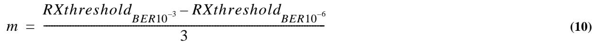
#407 interline_equation
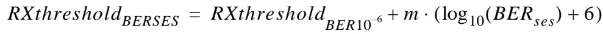
#408 titleĐa đường
#409 textTỷ lệ giây lỗi nghiêm trọng là xác suất fading đa đường trong tháng tồi tệ nhất tại ngưỡng máy thu B E R _ {S E S}.
#410 interline_equation
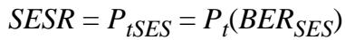
#411 textXác định xác suất fading trong tháng tồi tệ nhất tại mức ngưỡng thu tỷ lệ lỗi bit dư. BER dư (RBER) nằm trong phạm vi từ 1×10-10 đến 1×10-13 . 1 \times1 0 ^ {- 1 0} 1 \times1 0 ^ {- 1 3}
#412 interline_equation
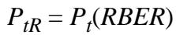
#413 textTính độ dốc của đường cong phân bố BER trên thang log - log cho BER trong phạm vi B E R _ {S E S} đến RBER
#414 interline_equation
#415 textTỷ lệ lỗi khối nền (BBER) sau đó được cho bởi:
#416 interline_equation
#417 texttrong đó
#418 text{\bf \alpha} _ {1} 10 đến 30, số lỗi trên mỗi cụm cho BER trong phạm vi từ 1 _ 10-3 đến { \mathrm {B E R} } _ { \mathrm {S E S} }
#419 text{ \mathfrak {a} } _ { 2 } 1 đến 10, số lỗi trên mỗi cụm cho BER trong phạm vi từ { \mathrm {B E R} } _ { \mathrm {S E S} } đến RBER.
#420 text{\alpha} _ {3} 1, số lỗi trên mỗi cụm cho BER thấp hơn RBER.
#421 textN _ {B} số bit trên mỗi khối từ bảng trên.
#422 textTỷ lệ giây lỗi (ESR) được cho bởi:
#423 interline_equation
#424 texttrong đó
#425 textn số khối trên giây từ bảng trên.
#426 titleMưa
#427 textTính toán tính không khả dụng do mưa, PaR trong tháng tồi tệ nhất tại mức ngưỡng máy thu { \mathrm {B E R} } _ { \mathrm {S E S} }. Các giá trị BBER và ESR cho mưa thu được bằng cách thay thế PaR cho SESR trong tính toán đa đường.
#428 titleKhông khả dụng - Chuyển đổi SESR
#429 textITU-T G.826 coi thời gian không khả dụng là sự tích lũy của tất cả các trạng thái SES kéo dài hơn 10 giây liên tiếp. Thời gian SESR là sự tích lũy của tất cả các trạng thái SES kéo dài dưới 10 giây liên tiếp. Người ta cho rằng fading do mưa sẽ luôn kéo dài hơn 10 giây liên tiếp và do đó fading do mưa được xếp vào loại không khả dụng. ITU-R P.530-8 nói rằng fading đa đường sẽ luôn nhỏ hơn 10 giây liên tiếp và do đó sẽ được xếp vào loại giây lỗi nghiêm trọng. Theo định nghĩa này, fading do mưa được gán cho không khả dụng và fading đa đường được gán cho SESR.
#430 textTrong trường hợp fading đa đường, điều này chỉ đúng với biên độ fading lớn. Trong triển khai ITU G.821 của Pathloss, thống kê thời gian fading đa đường đã được xem xét và fading đa đường kéo dài hơn 10 giây liên tiếp được gán cho không khả dụng; phần còn lại được gán cho giây lỗi nghiêm trọng. Quy ước này được sử dụng trong triển khai hiện tại của G.826
#431 titleYêu cầu Dữ liệu Chương trình Pathloss
#432 textDữ liệu vô tuyến bổ sung sau đây được yêu cầu để tính toán hiệu suất lỗi G.826:
#433 list
tỷ lệ lỗi bit dư
ngưỡng RX tại tỷ lệ lỗi bit dư
ngưỡng RX tại tỷ lệ lỗi bit 10-3
tỷ lệ lỗi bit SES (tùy chọn - có thể được chương trình tính toán)
ngưỡng RX tại tỷ lệ lỗi bit SES (tùy chọn - có thể được chương trình tính toán)
{\bf \alpha} _ {1} - số lỗi trên mỗi cụm cho BER trong phạm vi từ 1 \times1 0 ^ {- 3} đến \mathrm {B E R} _ { \mathrm {S E S} }
#434 list
\alpha _ {2} - số lỗi trên mỗi cụm cho BER trong phạm vi từ BERSES đến RBER
{\bf \alpha}\propto _ {3} - số lỗi trên mỗi cụm cho BER thấp hơn RBER
số bit trên mỗi khối
số khối trên giây
#435 textDữ liệu vô tuyến bổ sung sau đây được yêu cầu để tính toán xác suất fading chọn lọc bằng cách sử dụng chữ ký thiết bị thay vì biên độ fading tán xạ.
#436 list
độ trễ chữ ký (nanô giây)
độ rộng chữ ký (MHz)
độ sâu chữ ký - pha tối thiểu (dB)
độ sâu chữ ký - pha không tối thiểu (dB)
#437 textCác tham số sau đã được thêm vào để xử lý các tính toán hiệu suất P.530-8 cho hoạt động đồng kênh sử dụng thiết bị XPIC và kết hợp IF trên các hệ thống đa dạng không gian:
#438 list
độ lợi bộ kết hợp IF (dB)
hệ số cải thiện fading chọn lọc của bộ kết hợp IF
XPIF - hệ số cải thiện phân cực chéo
XPDXPIC - phân biệt phân cực chéo của thiết bị XPIC.
#440 textĐể đáp ứng các yêu cầu dữ liệu mới này, các định dạng tệp dữ liệu vô tuyến đã được mở rộng với các mục nhập mới sau và một số tùy chọn thiết bị / tính toán.
#441 code
DIGRADIO_TYPE
SDH // PDH, SDH hoặc NB_DIGITAL băng hẹp kỹ thuật số
SD_OPERATION IFC // BBS hoặc IFC chuyển mạch băng gốc hoặc bộ kết hợp IF
COCHANNEL_OPERATION YES // YES hoặc NO
USE_SIGNATURE YES // YES hoặc NO sử dụng chữ ký thiết bị
XPIF 17 // Hệ số cải thiện XPD đồng kênh
XPD_XPI 42 // XPD của thiết bị XPIC
IF_COMB_GAIN 3 // Độ lợi bộ kết hợp IF
LCOMB_FACTOR 10 // Hệ số cải thiện fading chọn lọc của bộ kết hợp IF
BITS_BLOCK 19940 // bit trên mỗi khối (chỉ SDH)
BLOCKS_SEC 8000 // khối trên giây (chỉ SDH)
ALPHA1 20 // (chỉ SDH)
ALPHA2 5 // (chỉ SDH)
ALPHA3 1 // (chỉ SDH)
SIGNATURE_DELAY_10-3 6.3 // độ trễ chữ ký (ns) tại BER 10-3
SIGNATURE_WIDTH_10-3 28 // độ rộng chữ ký (MHz) tại BER 10-3
SIGNATURE_MINPH_10-3 23.4 // độ sâu chữ ký - pha tối thiểu (dB) tại BER 10-3
SIGNATURE_NONMINPH_10-3 23.4 // độ sâu chữ ký - pha không tối thiểu (dB) tại BER 10-3
#442 code
SIGNATURE_DELAY_10-6 6.3 // độ trễ chữ ký (ns) tại BER 10-6
SIGNATURE_WIDTH_10-6 21.7 // độ rộng chữ ký (MHz) tại BER 10-6
SIGNATURE_MINPH_10-6 21.7 // độ sâu chữ ký - pha tối thiểu (dB) tại BER 10-6
SIGNATURE_NONMINPH_10-6 28.3 // độ sâu chữ ký - pha không tối thiểu (dB) tại BER 10-6
SIGNATURE_DELAY_SES // độ trễ chữ ký (ns) tại BER SES
SIGNATURE_WIDTH_SES // độ rộng chữ ký (MHz) tại BER SES
SIGNATURE_MINPH_SES // độ sâu chữ ký - pha tối thiểu (dB) tại BER SES
SIGNATURE_NONMINPH_SES // độ sâu chữ ký - pha không tối thiểu (dB) tại BER SES
RESIDUAL_BER 1.E-10 // tỷ lệ lỗi bit dư - ký hiệu khoa học
RXTHRESH_RBER -66 // ngưỡng RX tại RBER (dBm)
SES_BER // tỷ lệ lỗi bit SES - ký hiệu khoa học
RXTHRESH_SES_BER // ngưỡng RX tại BERses (dBm)
#443 textCác mã ghi nhớ mới có thể được đặt ở bất kỳ đâu trong tệp sau tiêu đề và trước dữ liệu đường cong. Cho phép các dòng trống và các nhận xét bắt đầu bằng dấu gạch chéo kép // có thể được sử dụng.
#444 textMột số tùy chọn thiết bị / tính toán đã được bao gồm:
#445 textDIGRADIO_TYPE SDH - Các giá trị cho phép là PDH, SDH hoặc NB_DIGITAL (băng hẹp kỹ thuật số). Các tùy chọn này chỉ ảnh hưởng đến định dạng của các biểu mẫu nhập dữ liệu trong bảng tính vi sóng. Ví dụ: dữ liệu chữ ký hoặc biên độ fading tán xạ không thể truy cập được với loại vô tuyến NB_DIGITAL được đặt.
#446 textSD_OPERATION - Các giá trị cho phép là IFC để kết hợp IF và BBS để chuyển mạch băng gốc. Tùy chọn này tự động đặt tính toán cải thiện đa dạng không gian thành kết hợp IF hoặc chuyển mạch băng gốc. Giá trị mặc định là chuyển mạch băng gốc.
#447 textCOCHANNEL_OPERATION - Các giá trị cho phép là YES hoặc NO. Điều này đặt tùy chọn hoạt động đồng kênh trong hộp thoại Tùy chọn Độ tin cậy. Giá trị mặc định là NO.
#448 textUSE_SIGNATURE - Các tùy chọn cho phép là YES để tính toán fading chọn lọc sử dụng chữ ký thiết bị hoặc NO để sử dụng biên độ fading tán xạ và hệ số xuất hiện fading tán xạ. Lưu ý rằng tùy chọn này có tác dụng tính toán cải thiện đa dạng theo đúng P.530-8.
#449 titleBiểu mẫu Nhập Dữ liệu Vô tuyến của Bảng tính Vi sóng
#450 textTất cả dữ liệu vô tuyến mới có thể được truy cập trong các biểu mẫu nhập dữ liệu vô tuyến trong bảng tính vi sóng. Định dạng của các biểu mẫu này đã được sửa đổi để bao gồm tất cả dữ liệu mới.
#451 titleBảng Tra cứu Vô tuyến
#452 textTất cả dữ liệu vô tuyến được bao gồm trong một mục nhập tra cứu; tuy nhiên, các mục dữ liệu sau không thể chỉnh sửa:
#453 list
tỷ lệ lỗi bit dư
ngưỡng RX tại tỷ lệ lỗi bit dư
ngưỡng RX tại tỷ lệ lỗi bit 10-3
tỷ lệ lỗi bit SES (tùy chọn - có thể được chương trình tính toán)
ngưỡng RX tại tỷ lệ lỗi bit SES (tùy chọn - có thể được chương trình tính toán)
\alpha _ {1} - số lỗi trên mỗi cụm cho BER trong phạm vi từ 1 \times1 0 ^ {- 3} đến BERSES
#454 list
\alpha _ {2} - số lỗi trên mỗi cụm cho BER trong phạm vi từ { \mathrm {B E R} } _ { \mathrm {S E S} } đến RBER
{\bf \alpha}\propto _ {3} - số lỗi trên mỗi cụm cho BER thấp hơn RBER
số bit trên mỗi khối
số khối trên giây
độ lợi bộ kết hợp IF (dB)
hệ số cải thiện fading chọn lọc của bộ kết hợp IF
XPIF - hệ số cải thiện phân cực chéo
\mathrm {X P D} _ { \mathrm {X P I C} } - phân biệt phân cực chéo của thiết bị XPIC
#455 textNếu một bảng tra cứu được sử dụng cho hoạt động G.826, thì dữ liệu phải được nhập từ một tệp dữ liệu vô tuyến. Để tạo một mục nhập vô tuyến mới tương tự như một mục hiện có, nhấp chuột trái vào mục tương tự trên cột bên trái. Số mục sẽ chuyển sang màu đỏ. Sau đó chọn Chỉnh sửa - Thêm và thực hiện các thay đổi cần thiết đối với phần hiển thị của dữ liệu. Mục nhập mới sẽ chứa các giá trị dữ liệu ẩn giống nhau.
#456 titleTriển khai Khuyến nghị ITU-T G.821 và G.826 của Pathloss
#457 titleCác tham số và mục tiêu hiệu suất lỗi
#458 textTất cả các mô hình truyền sóng đa đường (ví dụ ITU-530) tính toán xác suất fading cho tháng tồi tệ nhất theo một hướng truyền. Xác suất fading được định nghĩa là xác suất tín hiệu thu nằm dưới ngưỡng máy thu được chỉ định. Xác suất fading xem xét tổng của tất cả các fading và không tính đến thời gian của các fading riêng lẻ.
#459 textG.821 và G.826 đưa phân tích này đi xa hơn một bước và phân loại các fading kéo dài hơn 10 giây liên tiếp là không khả dụng và tất cả các fading khác là giây lỗi nghiêm trọng (SES). Thuật ngữ SES thường được gọi là hiệu suất. Thời gian của fading đa đường phụ thuộc vào biên độ fading. Xác suất fading đa đường kéo dài hơn 10 giây liên tiếp tăng lên khi biên độ fading giảm. Mối quan hệ được thể hiện trong hình bên phải.
#460 chart
#461 textTrong trường hợp fading do mưa, người ta thống nhất rằng fading do mưa sẽ luôn kéo dài hơn 10 giây liên tiếp và chỉ được phân loại là không khả dụng.
#462 textG.821 và G.826 cung cấp các mục tiêu hiệu suất về SES và không khả dụng mà không nêu rõ mối quan hệ giữa hai tham số
#463 interline_equation
#464 textỞ tần số rất cao, fading đa đường trở nên không đáng kể so với fading do mưa.
#465 textỞ tần số thấp hơn, nơi mưa không đáng kể, hai cách tiếp cận khác nhau đã được thực hiện:
#466 list
Đa đường được coi là chỉ ảnh hưởng đến hiệu suất và trong kịch bản này, tỷ lệ giây lỗi nghiêm trọng (SESR) bằng xác suất fading đa đường. Điều này thường được biện minh bởi các tiêu chuẩn cao của các công ty trong thiết kế các liên kết vi sóng; tuy nhiên, trong nhiều trường hợp, liên kết vi sóng đang được xem xét có thể có biên độ fading trong phạm vi 20 đến 30 dB. Các mục tiêu khó đạt được hơn vì không thể sử dụng khoản dự phòng cho không khả dụng. Lý do thực sự cho cách tiếp cận này là thiếu bất kỳ quy trình được công bố nào để phân chia tổng thời gian dưới mức thành SES và không khả dụng.
Các công ty khác đã phát triển thống kê thời gian fading của riêng họ để thực hiện điều này, tuy nhiên, các công thức đã không được công bố.
#467 textChương trình Pathloss đã sử dụng các phương trình này cho tính toán hiệu suất G.821 từ phiên bản 3.0. Các phương trình cụ thể được hiển thị bên dưới.
#468 textXác suất của một fading không chọn lọc kéo dài hơn t giây liên tiếp được cho bởi:
#469 interline_equation
#470 interline_equation
#471 texttrong đó:
#472 table
#473 textXác suất của một fading chọn lọc kéo dài hơn t giây liên tiếp được cho bởi:
#474 interline_equation
#475 textMột tùy chọn hiện có sẵn để tính toán kết quả ở một trong hai định dạng. Trong bảng tính vi sóng, chọn Hoạt động - Phương pháp Độ tin cậy và chọn lựa chọn "Xử lý đa đường như" cho cả SES và không khả dụng hoặc chỉ cho SES. Tùy chọn này có thể áp dụng cho cả tùy chọn G.821 và G.826.
#476 image
#477 titleĐịnh dạng Bảng tính
#478 textCác quy ước định dạng sau đã được áp dụng:
#479 list
Tính toán mưa hiện được thực hiện theo cả hai hướng. Trước đây chỉ có một tính toán được thực hiện cho giá trị nhỏ nhất trong hai biên độ fading không chọn lọc cho mưa.
Thời gian không khả dụng hàng năm tính bằng phút được hiển thị theo cả hai hướng. Nếu đa đường được coi là SES và không khả dụng, thì việc chuyển đổi từ tháng tồi tệ nhất sang hàng năm được đưa ra trong ITU-R P.530-9 đoạn 2.3.4 - "Chuyển đổi từ
#480 texttháng tồi tệ nhất trung bình sang phân bố hàng năm trung bình" như được mô tả dưới đây.
#481 texthệ số chuyển đổi địa khí hậu logarit ∆G được cho bởi
#482 interline_equation
#483 texttrong đó
#484 interline_equation
#485 textDấu dương trong phương trình (9) được sử dụng cho \xi\le4 5 ^ {\circ} và dấu âm cho \xi> 4 5 ^ {\circ}
#486 textXác suất fading hàng năm ρ liên quan đến tháng tồi tệ nhất \rho_ { \mathrm {w} } bằng phương trình:
#487 interline_equation
#488 textThuật ngữ bảng tính sau được sử dụng:
#489 table
#490 titleLoại Vô tuyến
#491 textCác phiên bản trước đây hiển thị vô tuyến được phân loại là Băng hẹp Kỹ thuật số, PDH hoặc SDH. Tùy chọn Băng hẹp Kỹ thuật số đã loại bỏ chữ ký thiết bị và biên độ fading tán xạ khỏi các biểu mẫu nhập dữ liệu vô tuyến. Tùy chọn băng hẹp kỹ thuật số đã bị loại bỏ. Hơn nữa, các tùy chọn PDH/SDH chỉ để cung cấp thông tin. Nếu một tính toán G.826 được thực hiện cho một vô tuyến PDH, người dùng có trách nhiệm đảm bảo rằng ngưỡng máy thu tương ứng với BER 1 0 ^ {- 3}. Tương tự, nếu một tính toán G.826 được thực hiện cho một vô tuyến SDH, người dùng phải đặt ngưỡng thành BER SES.
#492 titleCác Yếu tố Cải thiện Đa dạng và Mất kết nối Chọn lọc ITU P.530-8
#493 textCác tùy chọn Độ tin cậy bao gồm một lựa chọn để sử dụng biên độ fading tán xạ hoặc chữ ký thiết bị cho các tính toán mất kết nối tán xạ.
#494 textNếu tùy chọn chữ ký thiết bị được chọn, tất cả cải thiện đa dạng (không gian, tần số và bốn) sẽ được thực hiện theo P.530-8.
#495 textCác chi tiết cụ thể của từng tính toán được đưa ra trong các phần sau.
#496 titleMất kết nối do Fading Chọn lọc
#497 textXác suất mất kết nối được định nghĩa là xác suất BER vượt quá một ngưỡng nhất định như được xác định bởi BER của dữ liệu chữ ký.
#498 textBước 1: Tính độ trễ đường truyền trung bình \tau _ {m} từ phương trình (19):
#499 interline_equation
#500 texttrong đó
#501 textd là chiều dài đường truyền tính bằng km
#502 textBước 2: Tính hệ số hoạt động đa đường từ phương trình (20)η
#503 interline_equation
#504 texttrong đó
#505 textP0 P _ {O} hệ số xuất hiện fading
#506 textBước 3: Tính xác suất mất kết nối chọn lọc Ps từ phương trình (21)
#507 interline_equation
#508 texttrong đó
#509 textW độ rộng chữ ký tính bằng GHz
#510 textB _ {M} độ sâu chữ ký pha tối thiểu tính bằng dB
#511 textB _ {N M} độ sâu chữ ký pha không tối thiểu tính bằng dB
#512 text\tau _ {r} độ trễ tham chiếu tính bằng nanô giây được sử dụng để thu được chữ ký
#513 titleCải thiện Đa dạng Không gian
#514 textHệ số cải thiện đa dạng không gian không chọn lọc được cho bởi:
#515 interline_equation
#516 texttrong đó
#517 textP _ {O} hệ số xuất hiện fading
#518 textd G giá trị tuyệt đối của chênh lệch độ lợi ăng-ten chính và đa dạng
#519 textA biên độ fading phẳng
#520 textS khoảng cách dọc giữa ăng-ten chính và đa dạng (m từ tâm đến tâm)
#521 textd chiều dài đường truyền (km)
#522 textI _ {c o m b} độ lợi bộ kết hợp IF dB (0 cho các ứng dụng chuyển mạch băng gốc)
#523 textHệ số cải thiện đa dạng không gian Vigants tương ứng được cho bởi:
#524 interline_equation
#525 textLuôn luôn thú vị khi so sánh các phương pháp khác nhau:
#526 textGiả sử độ lợi ăng-ten chính và đa dạng bằng nhau dG = 0, v = 1 và \mathrm {I} _ { \mathrm {c o m b} } = 0 , một hệ thống với các tham số sau:
#527 table
#528 textsẽ tạo ra hệ số cải thiện đa dạng không gian không chọn lọc là 37 khi sử dụng phương pháp ITU so với 124 đối với phương pháp Vigants. Ở đây, cùng một giá trị cho P0 được sử dụng cho cả hai phương pháp. Hệ số xuất hiện fading ITU có xu hướng nhỏ hơn nhiều so với Vigants và điều này có xu hướng bù đắp cho sự khác biệt.
#529 textXác suất mất kết nối chọn lọc được tính như sau:
#530 textTính bình phương của hệ số tương quan không chọn lọc, \mathrm{ k _ {n s} }
#531 interline_equation
#532 texttrong đó
#533 table
#534 textTính bình phương của hệ số tương quan chọn lọc, \mathbf {k} _ { \mathrm {s} }
#535 interline_equation
#536 textXác suất mất kết nối không chọn lọc được cho bởi:
#537 interline_equation
#538 textXác suất mất kết nối chọn lọc được cho bởi:
#539 interline_equation
#540 texttrong đó \mathrm{ L _ {c o m b} } là hệ số cải thiện chọn lọc do bộ kết hợp.
#541 textTổng xác suất mất kết nối sau đó được cho bởi:
#542 interline_equation
#543 titleCải thiện Đa dạng Tần số
#544 textCải thiện đa dạng tần số không chọn lọc về cơ bản giống với công thức Vigants:
#545 interline_equation
#546 textPhương pháp Vigants giả định rằng hệ số cải thiện này có giá trị cho fading không chọn lọc và chọn lọc. Phương pháp ITU tính toán mất kết nối chọn lọc chính xác như trong trường hợp đa dạng không gian ở trên sử dụng \mathrm{ I _ {c o m b} } = 0 và \mathrm{ L _ {c o m b} = 1 } .
#547 titleCải thiện Đa dạng Bốn
#548 textHệ số cải thiện đa dạng bốn không chọn lọc là tổng của các hệ số đa dạng không gian và tần số:
#549 interline_equation
#550 textBình phương của hệ số tương quan không chọn lọc được cho bởi:
#551 interline_equation
#552 textMất kết nối chọn lọc được tính chính xác như trong trường hợp đa dạng không gian sử dụng
#553 interline_equation
#554 textcho các ứng dụng chuyển mạch băng gốc.
#555 titleHoạt động Đồng kênh
#556 textĐoạn này mô tả quy trình tính toán suy giảm ngưỡng do phân biệt phân cực chéo trên các liên kết vô tuyến hoạt động ở chế độ đồng kênh. XPD sẽ suy giảm trong điều kiện fading đa đường và mưa cường độ cao. Hoạt động đồng kênh được đặt bằng cách chọn Hoạt động - Độ tin cậy và sau đó chọn tùy chọn hoạt động đồng kênh.
#557 table
#558 textDữ liệu được truy cập bằng cách chọn Hoạt động - Nhiễu XPD Đồng kênh.
#559 titleSuy giảm XPD do Đa đường
#560 title1. Tính
#561 interline_equation
#562 interline_equation
#563 texttrong đó XPDg là giá trị tối thiểu của XPD ăng-ten phát và thu được đo trên hướng chuẩn.
#564 title2. Tính tham số hoạt động đa đường
#565 interline_equation
#566 texttrong đó P _ {O} là hệ số xuất hiện đa đường tương ứng với tỷ lệ phần trăm thời gian fading lớn hơn 0 dB xảy ra trong tháng tồi tệ nhất trung bình.
#567 title3. Tính
#568 interline_equation
#569 texttrong đó
#570 interline_equation
#571 interline_equation
#572 textTính
#573 interline_equation
#574 textTỷ lệ sóng mang trên nhiễu đồng kênh sau đó được cho bởi:
#575 interline_equation
#576 textđối với vô tuyến không được trang bị thiết bị XPIC và bằng phương trình sau đối với vô tuyến được trang bị XPIC.
#577 interline_equation
#578 texttrong đó
#579 textXPIF là cải thiện do thiết bị XPIC
#580 textX P D _ {G} là phân biệt phân cực chéo của các ăng-ten
#581 textXPDxpic X P D _ {x p i c} là XPD của thiết bị XPIC
#582 textA là biên độ fading bao gồm ảnh hưởng của nhiễu do các máy phát khác
#583 textCải thiện 2 dB trong trường hợp không có XPIC là do các đặc tính Gaussian của tín hiệu phân cực chéo gây nhiễu. Con số này được bao gồm trong XPIF cho vô tuyến được trang bị XPIC.
#584 titleSuy giảm XPD do Mưa
#585 textHệ số giảm XPD do mưa cường độ cao được cho bởi phương trình
#586 interline_equation
#587 interline_equation
#588 textTỷ lệ sóng mang trên nhiễu đồng kênh tương ứng sau đó được cho bởi:
#589 interline_equation
#590 interline_equation
#591 texttrong đó các tham số giống như được xác định ở trên.
#592 titleITU-R P530-9
#593 textDự đoán ITU-R P.530-9 cho phân bố fading tần số đơn hoặc băng hẹp ở độ sâu fading lớn trong tháng tồi tệ nhất trung bình ở bất kỳ nơi nào trên thế giới được xác định trong các bước sau. Lưu ý rằng chỉ có phương pháp thiết kế liên kết chi tiết được triển khai trong chương trình Pathloss
#594 titleBước 1
#595 textTính hệ số địa khí hậu K cho tháng tồi tệ nhất trung bình từ phương trình (43) dưới đây
#596 interline_equation
#597 texttrong đó
#598 textd N _ {1} là gradient khúc xạ điểm trong 65 m thấp nhất của khí quyển không vượt quá 1% của một năm trung bình. Dữ liệu cho d N _ {1} được cung cấp trên lưới 1,5 theo vĩ độ và kinh độ trong Khuyến nghị ITU-R P.453. Dữ liệu này đã được tích hợp vào chương trình Pathloss. Giá trị tại vĩ độ và kinh độ của tâm đường truyền được xác định bằng nội suy song tuyến tính của bốn điểm lưới gần nhất.
#599 texts _ {a} là độ nhám địa hình khu vực. Điều này được định nghĩa là độ lệch chuẩn của độ cao địa hình (m) trong một khu vực 110 km Þ 110 km với độ phân giải 30 giây cung. Khu vực được căn chỉnh xung quanh tâm của đường truyền.
#600 titleBước 2
#601 textTính độ nghiêng đường truyền \mathfrak {E} _ {p} sử dụng phương trình (44) dưới đây
#602 interline_equation
#603 texttrong đó
#604 texth _ {e} và h _ {r} là chiều cao ăng-ten tính bằng mét so với mực nước biển
#605 textd là chiều dài đường truyền tính bằng km
#606 titleBước 3
#607 textĐối với các ứng dụng thiết kế liên kết chi tiết, tính tỷ lệ phần trăm thời gian \mathtt{ p _ {w} } mà độ sâu fading A (dB) bị vượt quá trong tháng tồi tệ nhất trung bình từ phương trình (45)
#608 interline_equation
#609 texttrong đó
#610 textf tần số tính bằng GHz
#611 texth _ {L} độ cao của ăng-ten thấp hơn (tức là giá trị nhỏ hơn của h _ {e} và h _ { \mathrm {r} } )
#612 textK hệ số địa khí hậu từ (43)
#613 titleMục tiêu Hiệu suất Phân đoạn
#614 textTính năng này có thể truy cập trong mô-đun mạng. Chọn Phân đoạn - Mục tiêu.
#615 image
#616 textQuy trình như sau:
#617 textXác định các liên kết trong phân đoạn. Định nghĩa này bao gồm việc chọn các liên kết, xác định thứ tự sắp xếp chúng và xác định thứ tự của các trang web trong một liên kết. Cách dễ nhất để thực hiện điều này là thu nhỏ Hộp thoại Hiệu suất Phân đoạn và chọn các liên kết riêng lẻ theo thứ tự chúng sẽ xuất hiện bằng cách nhấp nút chuột trái trên liên kết. Lần nhấp đầu tiên chọn một liên kết - lần nhấp thứ hai loại bỏ liên kết khỏi phân đoạn. Bạn có thể đảo ngược một số liên kết hoặc thay đổi thứ tự nếu cần bằng cách quay lại hộp thoại Hiệu suất Phân đoạn.
#619 textTrong phương pháp thứ hai, các liên kết được chọn bằng cách di chuyển chúng từ hộp danh sách liên kết có sẵn sang hộp danh sách liên kết đã chọn. Bạn có thể loại bỏ một liên kết đã chọn bằng cách tô sáng liên kết và sau đó di chuyển liên kết trở lại danh sách liên kết có sẵn.
#620 textCó thể xác định bất kỳ số lượng phân đoạn nào với bất kỳ tổ hợp liên kết nào trong một phân đoạn. Hạn chế duy nhất là một liên kết phải có một liên kết tệp pl4 hợp lệ. Mỗi định nghĩa phân đoạn sẽ có tập hợp các mục tiêu hiệu suất riêng.
#621 textCác mục tiêu sẽ được tham chiếu đến định nghĩa phân đoạn hiện tại hoặc một đường dẫn tham chiếu giả định. Chiều dài của HRP phải được chỉ định bằng km.
#622 image
#623 textChọn phương pháp tính toán cho các mục tiêu (G.821, G.826 hoặc Thời gian hàng năm dưới mức). Giả định rằng các tệp pl4 được liên kết đã được cấu hình cho cùng một tùy chọn. Nếu các mục tiêu không được chỉ định, thì báo cáo sẽ chỉ chứa hiệu suất đã tính toán.
#624 titleHoạt động Mạng con
#625 textKhái niệm về mạng con đã được giới thiệu trong chương trình Pathloss trong bản dựng tháng 9 năm 2001. Tính năng này đơn giản hóa các hoạt động trên một mạng lớn và tự động hóa một số tác vụ thông thường như tạo mặt cắt đường truyền và nhập dữ liệu thiết bị.
#626 titleĐịnh nghĩa Mạng con
#627 textTrong mô-đun mạng, chọn Phân đoạn - Hoạt động Mạng con. Có hai phương pháp để xác định một mạng con.
#628 image
#629 list
Chọn các liên kết cần thiết từ danh sách Liên kết Có sẵn và di chuyển chúng sang danh sách liên kết Mạng con .
Nhấp vào các liên kết mong muốn trong màn hình mạng . Bạn có thể thu nhỏ hộp thoại cho mục đích này.
#630 textLưu ý rằng chỉ có các liên kết mới có thể được đặt trong một mạng con. Không có điều khoản để thêm các trang web riêng lẻ. Khi định nghĩa liên kết hoàn tất, hãy chọn tùy chọn Kích hoạt mạng con và nhấp OK để đóng hộp thoại. Mạng con luôn được lưu khi nhấp OK.
#631 textMàn hình mạng được thay đổi kích thước để chỉ hiển thị các liên kết mạng con. Tất cả các hoạt động mạng hiện chỉ giới hạn ở các liên kết này. Bạn có thể quay lại hộp thoại Hoạt động Liên kết con bất kỳ lúc nào và hủy kích hoạt liên kết con.
#632 titleTính toán Nhiễu trên Mạng con
#633 textMột tính toán nhiễu nội hệ thống có hai tùy chọn mới khi một mạng con đã được xác định và kích hoạt.
#634 image
#635 titleNhiễu nội hệ thống mạng con
#636 textTrong tùy chọn này, tính toán nhiễu được thực hiện chỉ cho các trang web trong mạng con. Tất cả các trang web khác đều bị bỏ qua.
#637 titleNhiễu mạng con chống lại mạng
#638 textMỗi trường hợp nhiễu phải liên quan đến một TX hoặc RX trong mạng con với một RX hoặc TX trong phần còn lại của màn hình mạng. Tất cả các kết hợp TX và RX của mạng con đều bị loại trừ. Tương tự, tất cả các kết hợp TX và RX trong phần còn lại của mạng cũng bị loại trừ.
#639 textTùy chọn Phân tích tệp hiện tại có thể được sử dụng trong một mạng con.
#640 titleTạo Mặt cắt Điểm-điểm
#641 textChức năng này tạo các tệp dữ liệu Pathloss (pl4) cho tất cả các liên kết được xác định trong mạng con. Nhập dữ liệu thiết bị dựa trên một tệp dữ liệu Pathloss mẫu.
#642 image
#643 textTrong hộp thoại định nghĩa mạng con, chọn "Tạo liên kết ptp" và nhấp vào nút hoạt động.
#644 textChọn tệp mẫu sẽ được sử dụng để tạo các tệp dữ liệu Pathloss mới. Tất cả các tham số thiết bị và cài đặt tính toán bao gồm vùng mưa sẽ được sử dụng.
#645 textTệp mẫu có thể là một tệp trên đĩa hoặc tệp hiện tại được tải trong bộ nhớ. Nếu một tệp đĩa được sử dụng, nhấp vào nút Duyệt để tải tệp.
#646 textTên tệp Pathloss có thể dựa trên tên trang web hoặc tên gọi.
#647 textChọn hộp Tạo mặt cắt đường truyền để tạo mặt cắt đường truyền. Phải cấu hình cơ sở dữ liệu địa hình.
#648 textNhấp vào nút OK để tạo các tệp dữ liệu Pathloss.
#649 titleChỉnh sửa Kế hoạch Tần số
#650 textThao tác này chỉ áp dụng cho các ứng dụng vi sóng. Chọn "Chỉnh sửa kế hoạch tần số" trong danh sách thả xuống hoạt động.
#651 textTô sáng các liên kết mong muốn trong hộp danh sách liên kết Mạng con.
#652 textNhấp vào nút Hoạt động. Biểu mẫu nhập dữ liệu kênh truyền sẽ được hiển thị cho từng liên kết theo trình tự. Các thay đổi sẽ được tự động ghi vào các tệp dữ liệu Pathloss được liên kết.
#653 titleLớp Liên kết Mạng con
#654 textThao tác này đặt lớp vẽ cho tất cả các liên kết trong mạng.
#655 image
#656 textChọn Lớp Liên kết trong danh sách thả xuống hoạt động và nhấp vào nút hoạt động. Đặt số lớp liên kết theo yêu cầu.
#657 titleĐiểm-đa điểm
#658 textThao tác này sẽ tạo các tệp dữ liệu Pathloss điểm-đa điểm cho tất cả các liên kết được xác định trong mạng.
#659 textMột trang web phải được chỉ định là trang web điểm-đa điểm; tất cả các trang web khác phải được chỉ định là từ xa. Phải sử dụng cùng một số sector cho tất cả các trang web. Các bước sau minh họa việc tạo, bố trí và thiết kế mạng Điểm-đa điểm.
#660 titleBước 1 - Nhập Trang web
#661 textNhập thông tin trang web vào Danh sách Trang web, thông tin này có thể được nhập dưới dạng các trang web riêng lẻ hoặc bạn có thể nhập dữ liệu từ một tệp văn bản hoặc các tệp dữ liệu Pathloss hiện có. Mỗi trang web phải được chỉ định là PMP hoặc trang web Từ xa, điều này được thực hiện bằng cách chọn và thay đổi giá trị trong danh sách thả xuống Loại.
#662 table
#663 textViệc gán số sector và mã nhận dạng trang web từ xa có thể được đơn giản hóa với các lựa chọn menu xem trong danh sách trang web. Chọn "chỉ hiển thị mạng con" và sau đó chọn "đặt lại loại trang web". Đặt loại trang web thành từ xa, nhập số sector và nhấp OK. Thay đổi thủ công mã nhận dạng trang web trung tâm thành điểm-đa điểm.
#664 image
#665 titleBước 2 - Tạo Sector
#666 textSau khi tất cả các trang web đã được nhập, bạn phải tạo các trang web trạm gốc bổ sung cho mỗi Sector trong trang web đó. Nhấp vào số dòng của trang web trạm gốc mà bạn muốn thêm một sector bổ sung. Số dòng sẽ chuyển sang màu đỏ như trong hình trên. Nhấp vào Chỉnh sửa, Thêm hoặc gõ Crtl A. Hộp thoại Thêm Mục sẽ xuất hiện với tất cả thông tin đã được nhập. Thay đổi số sector và nhấp OK.
#667 table
#668 titleBước 3 - Tạo Liên kết
#669 textBây giờ bạn có thể kết nối các trang web với nhau. Nhấp và kéo một đường từ trạm gốc
#670 textđến trang web từ xa và thả nút. Bạn sẽ phải chọn sector trạm gốc nào bạn muốn kết nối.
#671 textĐến lúc này, bạn sẽ có các Trang web đã nhập được xác định là Từ xa hoặc Trạm gốc và các liên kết đã được xác định. Các bước tiếp theo tạo một tệp mẫu và tạo các mặt cắt Pathloss.
#672 titleBước 4 - Tạo Mẫu
#673 textTrước khi chúng ta có thể tạo bất kỳ mặt cắt nào, trước tiên chúng ta cần có một mẫu có tất cả các giá trị được sử dụng trong việc tạo mặt cắt. Nhấp vào một trong các liên kết và đi đến mô-đun Bảng tính. Trong mô-đun Bảng tính, bạn nên xác định tất cả các thiết bị và tần số sẽ được sử dụng. Bạn cũng nên đặt chiều cao ăng-ten cho cả hai trang web. Các giá trị này sẽ được sử dụng trong tất cả các tệp Pathloss được tạo.
#674 textLưu tệp Pathloss này và quay lại mô-đun mạng.
#675 titleBước 5 - Tạo Mặt cắt
#676 textTrong mô-đun mạng, nhấp vào Phân đoạn và Hoạt động Mạng con. Chọn tất cả các liên kết cho sector đầu tiên bằng cách chọn các liên kết từ danh sách trong ngăn bên trái hoặc bằng cách thu nhỏ hộp thoại và chọn các liên kết bằng đồ họa trên màn hình. Sau khi tất cả các liên kết cho sector đó đã được chọn, đưa hộp thoại trở lại và nhấp vào Kích hoạt mạng con. Màn hình sẽ cập nhật trong nền chỉ hiển thị mạng con đã xác định được tô sáng màu hồng. Nhấp vào danh sách thả xuống dưới nút Hoạt động và chọn "Tạo Liên kết Ptmp". Nhấp vào Hoạt động.
#677 image
#678 image
#679 textHộp thoại Tạo tệp dữ liệu Pathloss sẽ xuất hiện. Chọn tệp mẫu để sử dụng cho việc tạo các tệp Pathloss. Tệp này là tệp Pathloss đã được tạo và lưu trong Bước 4 ở trên. Quyết định cách bạn muốn đặt tên cho các tệp, Site1-Site2.pl4 hoặc CallSign1- CallSign2.pl4. Nếu bạn có thiết lập cơ sở dữ liệu địa hình, hãy chọn Tạo mặt cắt đường truyền. Chương trình sẽ hỏi có ghi đè lên tệp Mẫu hay không, nhấp Có nếu không tệp mẫu sẽ không có mặt cắt đường truyền. Phần còn lại của các tệp được tạo sẽ nhắc xác nhận tên và vị trí lưu.
#680 image
#681 textSau khi tất cả các mặt cắt đã được tạo cho một sector, bạn có thể nhấp lại vào "Kích hoạt Mạng con" và sau đó bỏ chọn tất cả các liên kết.
#682 textLặp lại Bước 5 cho mỗi sector tại trang web.